🏗 Постройки
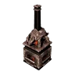
Большая кухня❤️ 15000
Большая кухня
ОбычныйСооружение для приготовления пищи. Большие размеры позволяют нескольким Палам готовить одновременно.
Из игры
Сооружение для приготовления пищи. Большие размеры позволяют нескольким Палам готовить одновременно. Для разжигания огня требуется помощь огненных Палов.
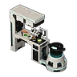
Древняя кухня❤️ 100000
Древняя кухня
ОбычныйКухня древней цивилизации, способная создавать всё — от существующих блюд до неизвестных новых рецептов.
Из игры
Кухня древней цивилизации, способная создавать всё — от существующих блюд до неизвестных новых рецептов. Процесс готовки включает накопление тепла огнём и ручной работы для завершения любого блюда. Для работы требуется Пал высокого уровня с навыками разжигания огня и ручной работы.
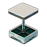
Древняя плантация❤️ 100000
Древняя плантация
ОбычныйДревняя плантация, использующая силу Мирового Древа для выращивания любых растений острова Палпагос.
🔨 Крафт
Из игры
Древняя плантация, использующая силу Мирового Древа для выращивания любых растений острова Палпагос. Он гораздо компактнее ягодной плантации и может быть установлен в помещении, однако процесс выращивания остаётся традиционным. Для работы требуется Пал высокого уровня с навыками посева, полива и сбора урожая.
 Картофельная плантация❤️ 2000
Картофельная плантация❤️ 2000
Картофельная плантация
ОбычныйПлантация, на которой выращиваются Картофель. Для созревания урожая требуется время, но это расширяет возможности в кулинарии.
Из игры
Плантация, на которой выращиваются Картофель. Для созревания урожая требуется время, но это расширяет возможности в кулинарии. Для посева, полива и сбора урожая требуется несколько Палов.
 Кормушка❤️ 2000
Кормушка❤️ 2000
Кормушка
ОбычныйЯщик для еды Палов. Проголодавшиеся Палы могут поесть здесь.
🔨 Крафт
Из игры
Ящик для еды Палов. Проголодавшиеся Палы могут поесть здесь. Не забывайте следить за запасами еды.
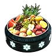
Кормушка-холодильник❤️ 2000
Кормушка-холодильник
ОбычныйКормушка с охлаждением. Прикрепите сюда ледяного Пала, чтобы замедлить порчу продуктов.
Костер❤️ 1000
Костер
ОбычныйНеобходимое сооружение для приготовления пищи. Подходит только для жарки простых продуктов.
🔨 Крафт
Из игры
Необходимое сооружение для приготовления пищи. Подходит только для жарки простых продуктов. Для разжигания огня требуется помощь огненных Палов.
Котелок❤️ 2000
Котелок
ОбычныйНеобходимое сооружение для приготовления пищи. Использование котелка расширяет кулинарные возможности.
Из игры
Необходимое сооружение для приготовления пищи. Использование котелка расширяет кулинарные возможности. Для разжигания огня требуется помощь огненных Палов.
 Луковая плантация❤️ 2000
Луковая плантация❤️ 2000
Луковая плантация
ОбычныйПлантация, на которой выращиваются Лук. Для созревания урожая требуется время, но это расширяет возможности в кулинарии.
Из игры
Плантация, на которой выращиваются Лук. Для созревания урожая требуется время, но это расширяет возможности в кулинарии. Для посева, полива и сбора урожая требуется несколько Палов.
 Морковная плантация❤️ 2000
Морковная плантация❤️ 2000
Морковная плантация
ОбычныйДля созревания урожая требуется время, но это расширяет возможности в кулинарии. Для посева, полива и сбора урожая требуется несколько Палов.
Из игры
Плантация, на которой выращиваются Морковь. Для созревания урожая требуется время, но это расширяет возможности в кулинарии. Для посева, полива и сбора урожая требуется несколько Палов.
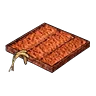
Пшеничная плантация❤️ 2000
Пшеничная плантация
ОбычныйВремя до созревания урожая среднее. Для посева, полива и сбора урожая требуется несколько Палов.
Из игры
Плантация, на которой выращиваются Пшеница. Время до созревания урожая среднее. Для посева, полива и сбора урожая требуется несколько Палов.
 Салатная плантация❤️ 2000
Салатная плантация❤️ 2000
Салатная плантация
ОбычныйДля созревания урожая требуется время, но это расширяет возможности в кулинарии. Для посева, полива и сбора урожая требуется несколько Палов.
Из игры
Плантация, на которой выращиваются Латук. Для созревания урожая требуется время, но это расширяет возможности в кулинарии. Для посева, полива и сбора урожая требуется несколько Палов.
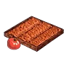
Томатная плантация❤️ 2000
Томатная плантация
ОбычныйДля созревания урожая требуется время, но это расширяет возможности в кулинарии. Для посева, полива и сбора урожая требуется несколько Палов.
Из игры
Плантация, на которой выращиваются Помидор. Для созревания урожая требуется время, но это расширяет возможности в кулинарии. Для посева, полива и сбора урожая требуется несколько Палов.
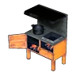
Электрическая кухня❤️ 5000
Электрическая кухня
ОбычныйНеобходимое сооружение для приготовления пищи. Потребляет электричество, но способно быстро приготовить много продуктов.
Из игры
Необходимое сооружение для приготовления пищи. Потребляет электричество, но способно быстро приготовить много продуктов. Для разжигания огня требуется помощь огненных Палов.
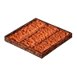
Ягодная плантация❤️ 2000
Ягодная плантация
ОбычныйУрожай созревает быстро, но от него трудно насытиться. Для посева, полива и сбора урожая требуется несколько Палов.
Из игры
Плантация, на которой выращиваются Красная ягода. Урожай созревает быстро, но от него трудно насытиться. Для посева, полива и сбора урожая требуется несколько Палов.
 Аккумулятор❤️ 10000
Аккумулятор❤️ 10000
Аккумулятор
ОбычныйСооружение для хранения излишков электричества, производимого Генератор.
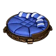
Большая кровать для Палов❤️ 5000
Большая кровать для Палов
ОбычныйБольшая кровать для Палов, на которой они смогут хорошо выспаться. Используется для сна раненых Палов и для ночного отдыха.
Из игры
Большая кровать для Палов, на которой они смогут хорошо выспаться. Используется для сна раненых Палов и для ночного отдыха. Даже крупные Палы смогут спать на ней с комфортом.
 Большой генератор❤️ 100000
Большой генератор❤️ 100000
Большой генератор
ОбычныйЭто сооружение накапливает электричество, вырабатываемое Палом молнии. Увеличено в размерах и обладает более высокой эффективностью генерации энергии.
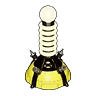
Генератор❤️ 10000
Генератор
ОбычныйЭто сооружение накапливает электричество, произведённое Палом молнии. Необходимо для работы потребляющих электричество сооружений.
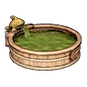
Горячий источник❤️ 3000
Горячий источник
ОбычныйЭто место, где уставшие Палы с базы могут отдохнуть. Снимает накопившуюся усталость и восстанавливает показатель рассудка.
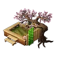
Горячий источник в японском стиле❤️ 15000
Горячий источник в японском стиле
ОбычныйЗдесь уставшие Палы-работники могут отдохнуть. Умиротворяющее пространство в японском стиле помогает эффективнее восстанавливать рассудок.
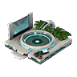
Горячий источник древней цивилизации❤️ 100000
Горячий источник древней цивилизации
ОбычныйГорячий источник древних технологий с водой, насыщенной палдиумом.
Из игры
Горячий источник древних технологий с водой, насыщенной палдиумом. Обладает одним из самых высоких показателей восстановления рассудка среди всех источников и дополнительно восстанавливает здоровье. По размеру не отличается от обычного горячего источника и позволяет максимально исцелять раненых Палов.
 Древний генератор❤️ 100000
Древний генератор❤️ 100000
Древний генератор
ОбычныйСверхэффективный генератор, воссозданный на основе утраченных древних технологий.
Из игры
Сверхэффективный генератор, воссозданный на основе утраченных древних технологий. Способен производить огромное количество электроэнергии, но существует риск перегрева во время работы. Для эксплуатации требуются Палы с умением генерации электроэнергии высокого уровня, а также Палы с умением полива.
🏗Древний кондиционер❤️ 8000
Древний кондиционер
ОбычныйПолезная постройка для базы.
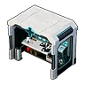
Древняя клиника❤️ 100000
Древняя клиника
ОбычныйСовременное воплощение передовых медицинских технологий древности — медицинское учреждение высшего уровня.
Из игры
Современное воплощение передовых медицинских технологий древности — медицинское учреждение высшего уровня. Обладает защитными возможностями, значительно превышающими обычные клиники. При назначении опытного Пала с навыками фармацевтики даже на базе с тяжёлыми условиями труда можно поддерживать максимальный уровень гигиены.
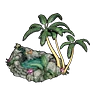
Изысканный горячий источник❤️ 5000
Изысканный горячий источник
ОбычныйЭто место, где уставшие Палы с базы могут отдохнуть. Позволяет более эффективно снять накопившуюся усталость и восстановить показатель рассудка.
 Качественная кровать❤️ 5000
Качественная кровать❤️ 5000
Качественная кровать
ОбычныйМягкая кровать для людей, обеспечивающая хороший сон. Используется для отдыха раненых и ночного сна.
Из игры
Мягкая кровать для людей, обеспечивающая хороший сон. Используется для отдыха раненых и ночного сна. Спокойно уснуть можно только под крышей.
 Клиника❤️ 4000
Клиника❤️ 4000
Клиника
ОбычныйБазовое медицинское учреждение для контроля здоровья Палов, работающих на базе.
Из игры
Базовое медицинское учреждение для контроля здоровья Палов, работающих на базе. Назначение Палов, умеющих готовить лекарства, позволяет снижать потерю рассудка и предотвращать болезни и травмы. Существует определённый предел поддерживаемой санитарной среды, но оно играет ключевую роль в управлении гигиеной базы на ранних этапах.
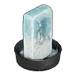
Кулер❤️ 5000
Кулер
ОбычныйУстройство, направляющее холодный воздух и снижающее температуру на базе. Сильно охладить не сможет, но от небольшой жары защитит.
Из игры
Устройство, направляющее холодный воздух и снижающее температуру на базе. Сильно охладить не сможет, но от небольшой жары защитит. Для охлаждения требуется помощь Палов льда.
 Мягкая кровать для Палов❤️ 5000
Мягкая кровать для Палов❤️ 5000
Мягкая кровать для Палов
ОбычныйМягкая кровать для Палов, в которой они могут хорошо выспаться. Используется для отдыха раненых Палов и для ночного сна.
Из игры
Мягкая кровать для Палов, в которой они могут хорошо выспаться. Используется для отдыха раненых Палов и для ночного сна. Палы будут рады такой мягкой кровати.
 Пал-капсула развитой цивилизации❤️ 5000
Пал-капсула развитой цивилизации❤️ 5000
Пал-капсула развитой цивилизации
ОбычныйВосстанавливающая капсула для Палов. Используется для отдыха раненых и ночного сна.
Из игры
Восстанавливающая капсула для Палов. Используется для отдыха раненых и ночного сна. Благодаря внедренным инновациям эффективность лечения увеличилась.
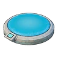
Пал-кровать древней цивилизации❤️ 8000
Пал-кровать древней цивилизации
ОбычныйРоскошная кровать для Палов, созданная на основе древней исцеляющей капсулы с мягкой тканью.
Из игры
Роскошная кровать для Палов, созданная на основе древней исцеляющей капсулы с мягкой тканью. Обладает одним из самых высоких показателей восстановления рассудка среди всех пал-кроватей и быстро снимает усталость. По размеру соответствует большой пал-кровати, поэтому подходит даже для крупных Палов.
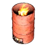
Пламенный обогреватель❤️ 2000
Пламенный обогреватель
ОбычныйУстройство, нагнетающее тёплый воздух и повышающее температуру на базе. Сильно не греет, но позволяет пережить лёгкий холод.
Из игры
Устройство, нагнетающее тёплый воздух и повышающее температуру на базе. Сильно не греет, но позволяет пережить лёгкий холод. Для розжига требуется помощь Палов огня.
 Простая кровать❤️ 2000
Простая кровать❤️ 2000
Простая кровать
ОбычныйПотрёпанная кровать для людей. Используется для отдыха раненых и ночного сна.
Из игры
Потрёпанная кровать для людей. Используется для отдыха раненых и ночного сна. Спокойно уснуть можно только под крышей.
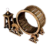
Ручной генератор❤️ 10000
Ручной генератор
ОбычныйСооружение, преобразующее вращательное движение в электричество. Эффективность низкая: работающие Палы теряют рассудок, но получают опыт.
 Соломенная кровать для Палов❤️ 2000
Соломенная кровать для Палов❤️ 2000
Соломенная кровать для Палов
ОбычныйИспользуется для отдыха раненых Палов и для ночного сна. Жёсткая, но это лучше, чем ничего.
🔨 Крафт
Из игры
Соломенная кровать для Палов. Используется для отдыха раненых Палов и для ночного сна. Жёсткая, но это лучше, чем ничего.
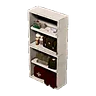
Шкафчик для лекарств❤️ 2000
Шкафчик для лекарств
ОбычныйШкафчик для хранения лекарств Палов. Здесь заболевшие Палы принимают лекарства.
Из игры
Шкафчик для хранения лекарств Палов. Здесь заболевшие Палы принимают лекарства. Следите за тем, чтобы запас не закончился.
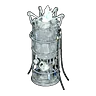
Электрический кулер❤️ 5000
Электрический кулер
ОбычныйУстройство, направляющее холодный воздух и снижающее температуру на базе. Благодаря использованию электричества охлаждает эффективно.
Из игры
Устройство, направляющее холодный воздух и снижающее температуру на базе. Благодаря использованию электричества охлаждает эффективно. Для охлаждения требуется помощь Палов льда.
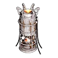
Электрический обогреватель❤️ 2000
Электрический обогреватель
ОбычныйУстройство, нагнетающее тёплый воздух и повышающее температуру на базе. Благодаря использованию электричества стало возможным более эффективное обогревание.
Из игры
Устройство, нагнетающее тёплый воздух и повышающее температуру на базе. Благодаря использованию электричества стало возможным более эффективное обогревание. Для розжига требуется помощь Палов огня.
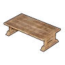
Аккуратный квадратный стол❤️ 2000
Аккуратный квадратный стол
ОбычныйАккуратный квадратный декоративный стол.
🔨 Крафт
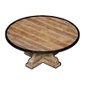
Аккуратный круглый стол❤️ 2000
Аккуратный круглый стол
ОбычныйАккуратный круглый декоративный стол.
🔨 Крафт
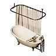
Антикварная ванна❤️ 2000
Антикварная ванна
ОбычныйДекоративная антикварная ванна.
Антикварная оттоманка❤️ 2000
Антикварная оттоманка
ОбычныйДекоративная антикварная оттоманка.
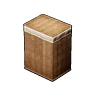
Антикварная плетеная корзина❤️ 2000
Антикварная плетеная корзина
ОбычныйДекоративная антикварная плетёная корзина.
🔨 Крафт
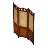
Антикварная ширма❤️ 2000
Антикварная ширма
ОбычныйДекоративная антикварная ширма.
🔨 Крафт
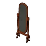
Антикварное зеркало❤️ 2000
Антикварное зеркало
ОбычныйДекоративное антикварное зеркало.
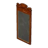
Антикварное настенное зеркало❤️ 2000
Антикварное настенное зеркало
ОбычныйДекоративное антикварное настенное зеркало. Можно прикрепить к стене.
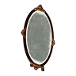
Антикварное овальное зеркало❤️ 2000
Антикварное овальное зеркало
ОбычныйДекоративное антикварное овальное зеркало.
Антикварные занавески❤️ 2000
Антикварные занавески
ОбычныйДекоративные антикварные занавески. Можно прикрепить к стене.
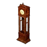
Антикварные часы с маятником❤️ 2000
Антикварные часы с маятником
ОбычныйДекоративные антикварные часы с маятником. Сломаны, поэтому по ним нельзя узнать время.
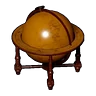
Антикварный глобус❤️ 2000
Антикварный глобус
ОбычныйДекоративный антикварный глобус.
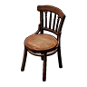
Антикварный деревянный стул❤️ 2000
Антикварный деревянный стул
ОбычныйДекоративный антикварный деревянный стул.
🔨 Крафт
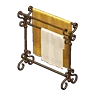
Антикварный держатель для полотенец❤️ 2000
Антикварный держатель для полотенец
ОбычныйДекоративная антикварная вешалка для полотенец.
Антикварный держатель для туалетной бумаги❤️ 2000
Антикварный держатель для туалетной бумаги
ОбычныйДекоративный антикварный держатель для туалетной бумаги.
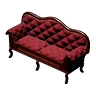
Антикварный диван для двоих❤️ 2000
Антикварный диван для двоих
ОбычныйДекоративный антикварный диван для двоих.
Антикварный диван для одного❤️ 2000
Антикварный диван для одного
ОбычныйДекоративное антикварное кресло.
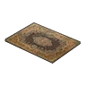
Антикварный ковер❤️ 2000
Антикварный ковер
ОбычныйДекоративный антикварный ковёр.
🔨 Крафт
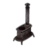
Антикварный обогреватель❤️ 2000
Антикварный обогреватель
ОбычныйДекоративная антикварная печь.
Антикварный письменный стол❤️ 2000
Антикварный письменный стол
ОбычныйДекоративный антикварный стол.
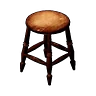
Антикварный табурет❤️ 2000
Антикварный табурет
ОбычныйДекоративный антикварный табурет.
🔨 Крафт
Антикварный туалетный столик❤️ 2000
Антикварный туалетный столик
ОбычныйТуалетный столик для приведения персонажа в порядок. Можно изменить внешний вид персонажа.
Антикварный умывальник❤️ 2000
Антикварный умывальник
ОбычныйДекоративный антикварный умывальник.
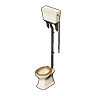
Антикварный унитаз❤️ 2000
Антикварный унитаз
ОбычныйДекоративный антикварный унитаз. По назначению не использовать.
Аркадный автомат❤️ 4000
Аркадный автомат
ОбычныйДекоративный аркадный автомат. Сломан и не пригоден для игры.
🔨 Крафт
🏗Баннер Организации по Защите Палов❤️ 2000
Баннер Организации по Защите Палов
ОбычныйДекоративный баннер Организации по Защите Палов.
🔨 Крафт
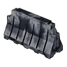
Белое железное заграждение❤️ 2000
Белое железное заграждение
ОбычныйДекоративная белая железная баррикада.
🔨 Крафт
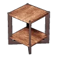
Боковой столик из железного дерева❤️ 2000
Боковой столик из железного дерева
ОбычныйДекоративный боковой столик из железного дерева.
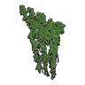
Большая лоза на стену❤️ 2000
Большая лоза на стену
ОбычныйБольшая декоративная лоза. Можно прикрепить к стене.
🔨 Крафт
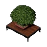
Бонсай❤️ 2000
Бонсай
ОбычныйДекоративный бонсай. Используйте для строительства в японском стиле.
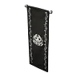
Вертикальное знамя Браконьеров❤️ 2000
Вертикальное знамя Браконьеров
ОбычныйДекоративное вертикальное знамя Браконьеров.
Вертикальное знамя Братства Вечного Пламени❤️ 2000
Вертикальное знамя Братства Вечного Пламени
ОбычныйДекоративное вертикальное знамя Братства Вечного Пламени.
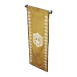
Вертикальное знамя Вигилантов❤️ 2000
Вертикальное знамя Вигилантов
ОбычныйДекоративное вертикальное знамя Вигилантов.
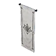
Вертикальное знамя Завета Лазурного Неба❤️ 2000
Вертикальное знамя Завета Лазурного Неба
ОбычныйДекоративное вертикальное знамя Завета Лазурного Неба.
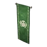
Вертикальное знамя Организации по Защите Палов❤️ 2000
Вертикальное знамя Организации по Защите Палов
ОбычныйДекоративное вертикальное знамя Организации по Защите Палов.
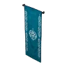
Вертикальное знамя воинов Тэнраку❤️ 2000
Вертикальное знамя воинов Тэнраку
ОбычныйДекоративное вертикальное знамя народа Тэнраку.
Вертикальное знамя общества Лунных Цветов❤️ 2000
Вертикальное знамя общества Лунных Цветов
ОбычныйДекоративное вертикальное знамя общества Лунных Цветов.
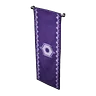
Вертикальное знамя отряда Генетических Исследований❤️ 2000
Вертикальное знамя отряда Генетических Исследований
ОбычныйДекоративное вертикальное знамя отряда Генетических Исследований.
Глиняная труба❤️ 2000
Глиняная труба
ОбычныйДекоративная бетонная труба.
🔨 Крафт
Горизонтальная лоза на стену❤️ 2000
Горизонтальная лоза на стену
ОбычныйДекоративная горизонтальная лоза. Можно прикрепить к стене.
🔨 Крафт
Декоративная деревянная полка на стену❤️ 2000
Декоративная деревянная полка на стену
ОбычныйКрепится к стене.
🔨 Крафт
Из игры
Декоративная деревянная полка. Крепится к стене.
Декоративное растение❤️ 2000
Декоративное растение
ОбычныйДекоративное растение для украшения интерьера.
🔨 Крафт
Декоративное растение в горшке❤️ 2000
Декоративное растение на стол❤️ 2000
Декоративное растение на стуле❤️ 2000
Декоративное растение на стуле
ОбычныйДекоративное растение на стуле для украшения интерьера.
🔨 Крафт
Деревянная скамейка❤️ 2000
Деревянная скамейка
ОбычныйДекоративная деревянная скамейка.
🔨 Крафт
Деревянная стойка❤️ 2000
Деревянная стойка
ОбычныйДекоративная деревянная стойка.
🔨 Крафт
🏗Деревянное заграждение❤️ 2000
Деревянное заграждение
ОбычныйДекоративное деревянное заграждение.
🔨 Крафт
Деревянный барный стул❤️ 2000
Деревянный барный стул
ОбычныйДекоративный деревянный барный стул.
🔨 Крафт
Деревянный стул❤️ 2000
Деревянный стул
ОбычныйДекоративный деревянный стул.
🔨 Крафт
Деревянный табурет❤️ 2000
Деревянный табурет
ОбычныйДекоративный деревянный табурет.
🔨 Крафт
🏗Дорожный знак «Проход для Палов запрещен»❤️ 2000
Дорожный знак «Проход для Палов запрещен»
ОбычныйДекоративный дорожный знак Проход для Палов запрещён. Когда-то использовался по назначению, теперь лишь часть декора.
🔨 Крафт
🏗Дорожный знак «Стоп»❤️ 2000
Дорожный знак «Стоп»
ОбычныйДекоративный дорожный знак Стоп. Когда-то использовался по назначению, теперь лишь часть декора.
🔨 Крафт
Железный стул❤️ 2000
Железный стул
ОбычныйДекоративный железный стул.
🔨 Крафт
Заграждение❤️ 2000
Заграждение
ОбычныйДекоративная баррикада.
🔨 Крафт
Зеленая бочка❤️ 2000
Зеленая бочка
ОбычныйДекоративная зелёная металлическая бочка.
Зеленый антикварный ковер❤️ 2000
Зеленый антикварный ковер
ОбычныйДекоративный зелёный антикварный ковёр.
Зеленый антикварный стул из дерева❤️ 2000
Зеленый антикварный стул из дерева
ОбычныйДекоративный зелёный антикварный деревянный стул.
🏗Знак «Аварийный выход» на потолок❤️ 2000
Знак «Аварийный выход» на потолок
ОбычныйДекоративный знак Выход. Может быть установлен на потолке.
🏗Знак «Аварийный выход» на стену❤️ 2000
Знак «Аварийный выход» на стену
ОбычныйДекоративный знак Выход. Может быть установлен на стене.
🏗Игровой автомат❤️ 2000
Игровой автомат
ОбычныйДекоративный кран-автомат. Сломан и не пригоден для игры.
Икэбана❤️ 2000
Икэбана
ОбычныйДекоративная икэбана. Используйте для строительства в японском стиле.
Каменный фонарь❤️ 2000
Каменный фонарь
ОбычныйДекоративный каменный фонарь. Используйте для строительства в японском стиле.
🔨 Крафт
Катушка❤️ 2000
Катушка
ОбычныйДекоративная кабельная катушка.
Квадратный стол❤️ 2000
Квадратный стол
ОбычныйДекоративный квадратный стол.
🔨 Крафт
Конус❤️ 2000
Конус
ОбычныйДекоративный дорожный конус.
🔨 Крафт
Красная бочка❤️ 2000
Красная бочка
ОбычныйДекоративная красная металлическая бочка.
Красное железное заграждение❤️ 2000
Красное железное заграждение
ОбычныйДекоративная красная железная баррикада.
Красный антикварный ковер❤️ 2000
Красный антикварный ковер
ОбычныйДекоративный красный антикварный ковёр.
🔨 Крафт
Круглый антикварный стол❤️ 2000
Круглый антикварный стол
ОбычныйДекоративный круглый антикварный стол.
Круглый металлический стол❤️ 2000
Круглый металлический стол
ОбычныйДекоративный круглый железный стол.
🔨 Крафт
Круглый стол❤️ 2000
Круглый стол
ОбычныйДекоративный круглый стол.
🔨 Крафт
Курильница❤️ 2000
Курильница
ОбычныйДекоративная курильница. Используйте для строительства в японском стиле.
🏗Лабораторный стол❤️ 2000
Лабораторный стол
ОбычныйДекоративный лабораторный стол
🔨 Крафт
🏗Лабораторный стул❤️ 2000
Лабораторный стул
ОбычныйДекоративный лабораторный стул
🔨 Крафт
Металлический забор❤️ 2000
Металлический забор
ОбычныйДекоративный железный забор.
🔨 Крафт
Металлический письменный стол❤️ 2000
Металлический письменный стол
ОбычныйДекоративный железный стол.
Металлический табурет❤️ 2000
Металлический табурет
ОбычныйДекоративный железный табурет.
🔨 Крафт
Мешок для мусора❤️ 2000
Мешок для мусора
ОбычныйДекоративный мешок для мусора.
🔨 Крафт
Модель бамбука B❤️ 500
Модель бамбука B
ОбычныйДекоративная модель бамбука. Из этого строения нельзя получить ресурсы.
🔨 Крафт
Модель бамбука C❤️ 500
Модель бамбука C
ОбычныйДекоративная модель бамбука. Из этого строения нельзя получить ресурсы.
🔨 Крафт
Модель бамбука А❤️ 500
Модель бамбука А
ОбычныйДекоративная модель бамбука. Из этого строения нельзя получить ресурсы.
🔨 Крафт
Модель белого куста❤️ 500
Модель белого куста
ОбычныйДекоративная модель белого куста. Из этого строения нельзя получить ресурсы.
🔨 Крафт
Модель дерева A❤️ 500
Модель дерева A
ОбычныйДекоративная модель дерева. Из этого строения нельзя получить ресурсы.
🔨 Крафт
Модель дерева B❤️ 500
Модель дерева B
ОбычныйДекоративная модель дерева. Из этого строения нельзя получить ресурсы.
🔨 Крафт
Модель дерева C❤️ 500
Модель дерева C
ОбычныйДекоративная модель дерева. Из этого строения нельзя получить ресурсы.
🔨 Крафт
Модель дерева с жёлтой листвой A❤️ 500
Модель дерева с жёлтой листвой A
ОбычныйДекоративная модель дерева с жёлтой листвой. Из этого строения нельзя получить ресурсы.
🔨 Крафт
Модель дерева с жёлтой листвой B❤️ 500
Модель дерева с жёлтой листвой B
ОбычныйДекоративная модель дерева с жёлтой листвой. Из этого строения нельзя получить ресурсы.
🔨 Крафт
Модель дерева с жёлтой листвой C❤️ 500
Модель дерева с жёлтой листвой C
ОбычныйДекоративная модель дерева с жёлтой листвой. Из этого строения нельзя получить ресурсы.
🔨 Крафт
Модель деревьев пустыни A❤️ 500
Модель деревьев пустыни A
ОбычныйДекоративная модель пустынного дерева. Из этого строения нельзя получить ресурсы.
🔨 Крафт
Модель деревьев пустыни B❤️ 500
Модель деревьев пустыни B
ОбычныйДекоративная модель пустынного дерева. Из этого строения нельзя получить ресурсы.
🔨 Крафт
Модель деревьев пустыни C❤️ 500
Модель деревьев пустыни C
ОбычныйДекоративная модель пустынного дерева. Из этого строения нельзя получить ресурсы.
🔨 Крафт
Модель заснеженного дерева A❤️ 500
Модель заснеженного дерева A
ОбычныйДекоративная модель заснеженного дерева. Из этого строения нельзя получить ресурсы.
🔨 Крафт
Модель заснеженного дерева B❤️ 500
Модель заснеженного дерева B
ОбычныйДекоративная модель заснеженного дерева. Из этого строения нельзя получить ресурсы.
🔨 Крафт
Модель заснеженного дерева C❤️ 500
Модель заснеженного дерева C
ОбычныйДекоративная модель заснеженного дерева. Из этого строения нельзя получить ресурсы.
🔨 Крафт
Модель камня❤️ 800
Модель камня
ОбычныйДекоративная модель камня. Из этого строения нельзя получить ресурсы.
🔨 Крафт
Модель кустарника❤️ 500
Модель кустарника
ОбычныйДекоративная модель куста. Из этого строения нельзя получить ресурсы.
🔨 Крафт
Модель кустарника с жёлтой листвой❤️ 500
Модель кустарника с жёлтой листвой
ОбычныйДекоративная модель пожелтевшого куста. Из этого строения нельзя получить ресурсы.
🔨 Крафт
Модель кустарника с цветами A❤️ 500
Модель кустарника с цветами A
ОбычныйДекоративная модель цветущего куста. Из этого строения нельзя получить ресурсы.
🔨 Крафт
Модель кустарника с цветами B❤️ 500
Модель кустарника с цветами B
ОбычныйДекоративная модель цветущего куста. Из этого строения нельзя получить ресурсы.
🔨 Крафт
Модель листопадного дерева A❤️ 500
Модель листопадного дерева A
ОбычныйДекоративная модель листопадного дерева. Из этого строения нельзя получить ресурсы.
🔨 Крафт
Модель листопадного дерева B❤️ 500
Модель листопадного дерева B
ОбычныйДекоративная модель листопадного дерева. Из этого строения нельзя получить ресурсы.
🔨 Крафт
Модель листопадного дерева C❤️ 500
Модель листопадного дерева C
ОбычныйДекоративная модель листопадного дерева. Из этого строения нельзя получить ресурсы.
🔨 Крафт
Модель сакуры A❤️ 500
Модель сакуры A
ОбычныйДекоративная модель сакуры. Из этого строения нельзя получить ресурсы.
🔨 Крафт
Модель сакуры B❤️ 500
Модель сакуры B
ОбычныйДекоративная модель сакуры. Из этого строения нельзя получить ресурсы.
🔨 Крафт
Модель сакуры C❤️ 500
Модель сакуры C
ОбычныйДекоративная модель сакуры. Из этого строения нельзя получить ресурсы.
🔨 Крафт
Модель тропического дерева A❤️ 500
Модель тропического дерева A
ОбычныйДекоративная модель тропического дерева. Из этого строения нельзя получить ресурсы.
🔨 Крафт
Модель тропического дерева B❤️ 500
Модель тропического дерева B
ОбычныйДекоративная модель тропического дерева. Из этого строения нельзя получить ресурсы.
🔨 Крафт
Модель тропического дерева C❤️ 500
Модель тропического дерева C
ОбычныйДекоративная модель тропического дерева. Из этого строения нельзя получить ресурсы.
🔨 Крафт
Модель тропического куста❤️ 500
Модель тропического куста
ОбычныйДекоративная модель тропического куста. Из этого строения нельзя получить ресурсы.
🔨 Крафт
Напольный стул❤️ 2000
Напольный стул
ОбычныйДекоративный напольный стул. Используйте для строительства в японском стиле.
Настенные часы❤️ 2000
Настенные часы
ОбычныйДекоративные настенные часы. Сломаны, поэтому по ним нельзя узнать время.
Небольшая лоза на стену❤️ 2000
Небольшая лоза на стену
ОбычныйНебольшая декоративная лоза. Можно прикрепить к стене.
🔨 Крафт
Низкий стол из железного дерева❤️ 2000
Низкий стол из железного дерева
ОбычныйДекоративный низкий столик из железного дерева.
Обитый кожей диван для двоих❤️ 2000
Обитый кожей диван для двоих
ОбычныйДекоративный кожаный диван для двоих.
🔨 Крафт
Обитый кожей диван для одного❤️ 2000
Обитый кожей диван для одного
ОбычныйДекоративное кожаное кресло.
🔨 Крафт
Обитый кожей стул❤️ 2000
Обитый кожей стул
ОбычныйДекоративный кожаный стул.
🔨 Крафт
Оранжевое заграждение❤️ 2000
Оранжевое заграждение
ОбычныйДекоративная оранжевая баррикада.
Очаг❤️ 2000
Очаг
ОбычныйДекоративный очаг. Используйте для строительства в японском стиле.
Пианино❤️ 2000
Пианино
ОбычныйДекоративное пианино. Сыграть на нем не получится.
Письменный стол❤️ 2000
Письменный стол
ОбычныйДекоративный письменный стол. Используйте для строительства в японском стиле.
🔨 Крафт
Подушка❤️ 2000
Подушка
ОбычныйДекоративная подушка. Используйте для строительства в японском стиле.
🔨 Крафт
🏗Предупредительный знак «Осторожно, Иктирдир!»❤️ 2000
Предупредительный знак «Осторожно, Иктирдир!»
ОбычныйВо времена древней цивилизации были нередки столкновения Иктирдиров с другими Палами.
🔨 Крафт
Из игры
Декоративный предупредительный знак Осторожно, Иктирдир!. Во времена древней цивилизации были нередки столкновения Иктирдиров с другими Палами.
🏗Предупредительный знак «Осторожно, Мамморест!»❤️ 2000
Предупредительный знак «Осторожно, Мамморест!»
ОбычныйВо времена древней цивилизации было много случаев гибели пострадавших от гнева Маммореста.
🔨 Крафт
Из игры
Декоративный предупредительный знак Осторожно, Мамморест!. Во времена древней цивилизации было много случаев гибели пострадавших от гнева Маммореста.
🏗Проволочный забор❤️ 2000
Проволочный забор
ОбычныйДекоративный проволочный забор.
🏗Пустая клетка❤️ 2000
Пустая клетка
ОбычныйДекоративная пустая клетка.
🔨 Крафт
Рояль❤️ 2000
Рояль
ОбычныйДекоративный рояль. Сыграть на нем не получится.
Светофор❤️ 2000
Светофор
ОбычныйДекоративный светофор.
Свиток❤️ 2000
Свиток
ОбычныйДекоративный свиток. Используйте для строительства в японском стиле.
Синяя бочка❤️ 2000
Синяя бочка
ОбычныйДекоративная синяя металлическая бочка.
Содзу❤️ 2000
Содзу
ОбычныйДекоративное содзу. Используйте для строительства в японском стиле.
Старый телевизор❤️ 2000
Старый телевизор
ОбычныйДекоративный старый телевизор. Этот артефакт древней цивилизации теперь показывает лишь изображения Пенгуллетов.
🔨 Крафт
Статуя Джетрагона❤️ 3000
Статуя Джетрагона
ОбычныйДекоративная статуя Джетрагона.
🔨 Крафт
🏗Статуя Лилин❤️ 2000
Статуя Лилин
ОбычныйМебель для украшения базы.
🔨 Крафт
Из игры
Декоративная статуя Лилин.
🏗Статуя Лунного лорда❤️ 2000
Статуя Лунного лорда
ОбычныйЗолотая статуя Лунный лорд. Символ силы тех, кто пережил отчаянную битву.
🔨 Крафт
 Статуя Фросталлиона❤️ 4000
Статуя Фросталлиона❤️ 4000
Статуя Фросталлиона
ОбычныйДекоративная статуя Фросталлиона.
🔨 Крафт
🏗Статуя Якумо❤️ 2000
Статуя Якумо
ОбычныйМебель для украшения базы.
🔨 Крафт
Из игры
Декоративная статуя Якумо.
Стол из железного дерева❤️ 2000
Стол из железного дерева
ОбычныйДекоративный стол из железного дерева.
Стул в виде лягушки❤️ 2000
Стул в виде лягушки
ОбычныйСимпатичный декоративный стул.
🔨 Крафт
Толстый дорожный конус❤️ 2000
Толстый дорожный конус
ОбычныйДекоративный толстый дорожный конус.
🔨 Крафт
Тонкий дорожный конус❤️ 2000
Тонкий дорожный конус
ОбычныйДекоративный тонкий дорожный конус.
🔨 Крафт
Торговый автомат с колой❤️ 2000
Торговый автомат с колой
ОбычныйДекоративный торговый автомат с колой. Ничего не продаёт.
Узкий антикварный ковер❤️ 2000
Узкий антикварный ковер
ОбычныйДекоративный узкий антикварный ковёр.
🔨 Крафт
🏗Флаг Браконьеров❤️ 2000
Флаг Браконьеров
ОбычныйДекоративный флаг с гербом Браконьеров.
🏗Флаг Браконьеров❤️ 2000
Флаг Браконьеров
ОбычныйДекоративный флаг Браконьеров.
🔨 Крафт
Флаг Братства Вечного Пламени❤️ 2000
Флаг Братства Вечного Пламени
ОбычныйДекоративный флаг с гербом Братства Вечного Пламени.
Флаг Вигилантов❤️ 2000
Флаг Вигилантов
ОбычныйДекоративный флаг с гербом Вигилантов.
Флаг Завета Лазурного Неба❤️ 2000
Флаг Завета Лазурного Неба
ОбычныйДекоративный флаг Завета Лазурного Неба.
🏗Флаг Организации по Защите Палов❤️ 2000
Флаг Организации по Защите Палов
ОбычныйДекоративный флаг с гербом Организации по Защите Палов.
🏗Флаг Организации по Защите Палов❤️ 2000
Флаг Организации по Защите Палов
ОбычныйДекоративный флаг Организации по Защите Палов.
Флаг воинов Тэнраку❤️ 2000
Флаг воинов Тэнраку
ОбычныйДекоративный флаг народа Тэнраку.
Флаг общества Лунных Цветов❤️ 2000
Флаг общества Лунных Цветов
ОбычныйДекоративный флаг с гербом общества Лунных Цветов.
Флаг отряда Генетических Исследований❤️ 2000
Флаг отряда Генетических Исследований
ОбычныйДекоративный флаг с гербом отряда Генетических Исследований.
Футбольные ворота❤️ 2000
Футбольные ворота
ОбычныйДекоративные футбольные ворота. Ламболл не принесёт очков — голы не засчитываются.
Шина❤️ 2000
Шина
ОбычныйДекоративная шина.
Ширма❤️ 2000
Ширма
ОбычныйДекоративная ширма. Используйте для строительства в японском стиле.
 Большой капкан❤️ 500
Большой капкан❤️ 500
Большой капкан
ОбычныйКапкан для обездвиживания больших Палов. Шанс поимки таких Палов с помощью сфер повышается.
🔨 Крафт
Из игры
Капкан для обездвиживания больших Палов. Шанс поимки таких Палов с помощью сфер повышается. Действует только на больших Палов — маленькие в него не попадаются.
 Деревянная защитная стена❤️ 5000
Деревянная защитная стена❤️ 5000
Деревянная защитная стена
ОбычныйОгромная стена, защищающая от вторжения внешних врагов. Непрочная, ведь сделана из дерева.
🔨 Крафт
 Деревянные ворота❤️ 5000
Деревянные ворота❤️ 5000
Деревянные ворота
ОбычныйВорота для прохода больших Палов. Непрочная, ведь сделана из дерева.
🔨 Крафт
🏗Древняя турель❤️ 10000
Древняя турель
ОбычныйАвтоматическая турель древней цивилизации с размерами и огневой мощью уровня ракетомёта.
Из игры
Автоматическая турель древней цивилизации с размерами и огневой мощью уровня ракетомёта. Не требует боеприпасов или назначения Палов — полностью автоматическое перехватывание работает только от электричества. Очень мощная, но для работы требует огромного количества электроэнергии.
Железные ворота❤️ 50000
Железные ворота
ОбычныйВорота для прохода больших Палов. Невероятно прочная, ведь сделана из металла.
 Замораживающая мина❤️ 500
Замораживающая мина❤️ 500
Замораживающая мина
ОбычныйЛовушка, замораживающая Палов, наступивших на неё. Шанс поимки таких замороженных Палов с помощью сфер повышается.
🏗Защитная стена❤️ 20000
Защитная стена
ОбычныйОгромная стена, защищающая от вторжения внешних врагов. Довольно прочная, ведь сделана из камня.
🔨 Крафт
Каменные ворота❤️ 20000
Каменные ворота
ОбычныйВорота для прохода больших Палов. Довольно прочные, ведь сделана из камня.
🔨 Крафт
 Металлическая защитная стена❤️ 50000
Металлическая защитная стена❤️ 50000
Металлическая защитная стена
ОбычныйОгромная стена, защищающая от вторжения внешних врагов. Невероятно прочная, ведь сделана из металла.
Мешок с песком❤️ 10000
Мешок с песком
ОбычныйОборонительное сооружение для защиты базы от врагов. Палы, размещённые здесь, оставят все другие дела и будут вести дозор, готовясь к бою.
🔨 Крафт
 Мина❤️ 500
Мина❤️ 500
Мина
ОбычныйЛовушка, взрывающая Палов при активации. Наносит урон по широкой области.
Небольшой капкан❤️ 500
Небольшой капкан
ОбычныйЛовушка, обездвиживающая Палов, наступивших на неё. Шанс поимки таких Палов с помощью сфер повышается.
🔨 Крафт
Из игры
Ловушка, обездвиживающая Палов, наступивших на неё. Шанс поимки таких Палов с помощью сфер повышается. Действует только на маленьких Палов.
Подвесная ловушка❤️ 5000
Подвесная ловушка
ОбычныйЛовушка для ловли проходящих мимо Палов. Шанс поимки таких Палов с помощью сфер повышается.
🔨 Крафт
Из игры
Ловушка для ловли проходящих мимо Палов. Шанс поимки таких Палов с помощью сфер повышается. Действует только на маленьких Палов.
Сигнальный колокол❤️ 1000
Сигнальный колокол
ОбычныйКолокол для изменения состояния тревоги Палов на базе. Вы можете переключаться между режимом обороны и режимом работы в любое время.
🔨 Крафт
Стационарная ракетная установка❤️ 10000
Стационарная ракетная установка
ОбычныйОборонительное сооружение, где размещают Палов для подготовки к бою.
Из игры
Оборонительное сооружение, где размещают Палов для подготовки к бою. Если назначить Пала с рабочим умением Ручная работа, он будет использовать ракетную установку и продолжит защищать базу.
Стационарный арбалет❤️ 10000
Стационарный арбалет
ОбычныйОборонительное сооружение, где размещают Палов для подготовки к бою.
Из игры
Оборонительное сооружение, где размещают Палов для подготовки к бою. Если назначить Пала с рабочим умением Ручная работа, он будет использовать арбалет и продолжит защищать базу.
 Стационарный пулемет❤️ 10000
Стационарный пулемет❤️ 10000
Стационарный пулемет
ОбычныйОборонительное сооружение, где размещают Палов для подготовки к бою.
Из игры
Оборонительное сооружение, где размещают Палов для подготовки к бою. Если назначить Пала с рабочим умением Ручная работа, он будет использовать пулемёт и продолжит защищать базу.
 Электрическая мина❤️ 500
Электрическая мина❤️ 500
Электрическая мина
ОбычныйЛовушка, поражающая током Палов, наступивших на неё. Шанс поимки таких Палов, находящихся под воздействием электричества, с помощью сфер повышается.
Бежевая антикварная напольная лампа❤️ 2000
Бежевая антикварная напольная лампа
ОбычныйАнтикварная коричневая напольная лампа для освещения. Для работы требуется электричество.
Большая потолочная лампа❤️ 4000
Большая потолочная лампа
ОбычныйИсточник света, освещающий базу даже в тёмную ночь. Можно установить на потолке.
Из игры
Источник света, освещающий базу даже в тёмную ночь. Можно установить на потолке. Требует больше электричества, но освещает ещё большую площадь.
Большая стационарная лампа❤️ 4000
Большая стационарная лампа
ОбычныйИсточник света, освещающий базу даже в тёмную ночь. Требует больше электричества, но освещает ещё большую площадь.
🏗Бумажный фонарик❤️ 2000
Бумажный фонарик
ОбычныйДекоративный фонарик.
Бумажный фонарь❤️ 2000
Бумажный фонарь
ОбычныйДекоративный бумажный фонарь. Используйте для строительства в японском стиле.
🏗Величественный настенный факел❤️ 1000
Величественный настенный факел
ОбычныйПомпезный факел, пылающий огнём, почитаемым Братством Вечного Пламени. Источник света, который можно установить на стену.
Из игры
Помпезный факел, пылающий огнём, почитаемым Братством Вечного Пламени. Источник света, который можно установить на стену. Для розжига требуется помощь Палов огненного элемента.
🏗Величественный подсвечник❤️ 1000
Величественный подсвечник
ОбычныйПомпезный подсвечник, зажжённый огнём, почитаемым Братством Вечного Пламени. Источник света, который можно разместить на полу.
Из игры
Помпезный подсвечник, зажжённый огнём, почитаемым Братством Вечного Пламени. Источник света, который можно разместить на полу. Для розжига требуется помощь Палов огненного элемента.
Двойной уличный фонарь❤️ 2000
Двойной уличный фонарь
ОбычныйДвухрожковый уличный фонарь для освещения. Для работы требуется электричество.
Камин❤️ 2000
Камин
ОбычныйКамин, служащий источником света. Для разжигания огня требуется огненный Пал.
🔨 Крафт
Канделябр❤️ 2000
Канделябр
ОбычныйЛюстра для освещения. Для работы требуется электричество.
Кирпичный камин❤️ 2000
Кирпичный камин
ОбычныйКирпичный камин, служащий источником света. Для разжигания огня требуется огненный Пал.
🔨 Крафт
Красная антикварная напольная лампа❤️ 2000
Красная антикварная напольная лампа
ОбычныйАнтикварная красная напольная лампа для освещения. Для работы требуется электричество.
Настенная лампа❤️ 2000
Настенная лампа
ОбычныйНастенная лампа для освещения. Для работы требуется электричество.
Настенный факел❤️ 1000
Настенный факел
ОбычныйИсточник света, освещающий базу даже в тёмную ночь. Можно установить на стене.
🔨 Крафт
Из игры
Источник света, освещающий базу даже в тёмную ночь. Можно установить на стене. Для разжигания огня требуется помощь огненных Палов.
 Потолочная лампа❤️ 2000
Потолочная лампа❤️ 2000
Потолочная лампа
ОбычныйИсточник света, освещающий базу даже в тёмную ночь. Можно установить на потолке.
Из игры
Источник света, освещающий базу даже в тёмную ночь. Можно установить на потолке. Требует электричества, но освещает гораздо большую площадь.
Простой уличный фонарь❤️ 2000
Простой уличный фонарь
ОбычныйПростой уличный фонарь для освещения. Для работы требуется электричество.
🏗Ритуальный подсвечник❤️ 1000
Ритуальный подсвечник
ОбычныйРитуальный подсвечник, пылающий огнём, которому поклоняется Братство Вечного Пламени. Может быть установлен на полу в качестве источника света.
Из игры
Ритуальный подсвечник, пылающий огнём, которому поклоняется Братство Вечного Пламени. Может быть установлен на полу в качестве источника света. Для розжига требуется помощь Палов огненного элемента.
Роскошный уличный фонарь❤️ 2000
Роскошный уличный фонарь
ОбычныйЭлегантный уличный фонарь для освещения. Для работы требуется электричество.
Старомодный уличный фонарь❤️ 2000
Старомодный уличный фонарь
ОбычныйСтаромодный уличный фонарь для освещения. Для работы требуется электричество.
 Стационарная лампа❤️ 2000
Стационарная лампа❤️ 2000
Стационарная лампа
ОбычныйИсточник света, освещающий базу даже в тёмную ночь. Требует электричества, но освещает гораздо большую площадь.
 Стационарный факел❤️ 1000
Стационарный факел❤️ 1000
Стационарный факел
ОбычныйИсточник света, освещающий базу даже тёмной ночью. Для разжигания огня требуется помощь огненных Палов.
🔨 Крафт
🏗Японский садовый фонарь❤️ 2000
Японский садовый фонарь
ОбычныйДекоративный садовый фонарь
Большой инкубатор❤️ 2000
Большой инкубатор
ОбычныйУстройство для выведения яиц Палов. Автоматически поддерживает оптимальную температуру и позволяет одновременно выводить несколько яиц.
Большой электроинкубатор❤️ 2000
Большой электроинкубатор
ОбычныйУстройство для инкубации яиц Палов. Требует электропитания, поддерживает оптимальную температуру и позволяет вынашивать несколько яиц одновременно.
Вышка надзирателя❤️ 4000
Вышка надзирателя
ОбычныйПозволяет задавать Палам на базе режим работы и разрешать/запрещать выполнение отдельных заданий.
🔨 Крафт
Древний инкубатор❤️ 100000
Древний инкубатор
ОбычныйПродвинутый центр разведения древней цивилизации, покрытый электронным стеклом.
Из игры
Продвинутый центр разведения древней цивилизации, покрытый электронным стеклом. Полностью автоматически и с высокой скоростью выполняет весь процесс — от получения яиц до их вылупления, а также повышает вероятность наследования редких навыков. Палы управляются с помощью голографической системы, поэтому не требуется большое пространство для племенной фермы.
 Древний пост наблюдения❤️ 100000
Древний пост наблюдения❤️ 100000
Древний пост наблюдения
ОбычныйПост наблюдения древних технологий с вмонтированным красным палдиумом.
Из игры
Пост наблюдения древних технологий с вмонтированным красным палдиумом. С помощью голографического интерфейса она управляет всей базой и одновременно снижает потерю рассудка у Палов. Особые волны окутывают базу, позволяя сохранять спокойствие Палов даже в суровых условиях работы.
 Клетка для демонстрации❤️ 20000
Клетка для демонстрации❤️ 20000
Клетка для демонстрации
ОбычныйКлетка для демонстрации пойманных Палов.
Из игры
Клетка для демонстрации пойманных Палов. Палы внутри не могут сражаться или выполнять работу, но при этом не нуждаются в пище.Disabled on multiplayer to prevent performance issues.
Конвейер для разделки Палов❤️ 4000
Конвейер для разделки Палов
ОбычныйСооружение мечты, автоматически разделывающее помещенных внутрь Палов.
 Многомерное хранилище Палов❤️ 20000
Многомерное хранилище Палов❤️ 20000
Многомерное хранилище Палов
ОбычныйСооружение, позволяющая хранить большое количество пойманных Палов. Все члены гильдии могут отправлять Палов на хранение и забирать их.
Из игры
Сооружение, позволяющая хранить большое количество пойманных Палов. Все члены гильдии могут отправлять Палов на хранение и забирать их. Если сделать хранилище приватным, его можно использовать как личный склад Палов.
 Пастбище для скота❤️ 5000
Пастбище для скота❤️ 5000
Пастбище для скота
ОбычныйФерма для выпаса Палов, таких как овцы и куры. Если назначить Пала с особым навыком спутника, он будет производить предметы.
 Терминал управления Палбоксом❤️ 20000
Терминал управления Палбоксом❤️ 20000
Терминал управления Палбоксом
ОбычныйУстройство для удалённого управления Палбоксом. Разместите его там, где хотите вызвать Палов, и свободно обустраивайте свою базу.
Улучшенный пост наблюдения❤️ 8000
Улучшенный пост наблюдения
ОбычныйПост наблюдения из улучшенных материалов с более совершенной конструкцией.
Из игры
Пост наблюдения из улучшенных материалов с более совершенной конструкцией. Помимо возможности отдавать те же рабочие распоряжения, что и раньше, он также замедляет снижение рассудка у Палов на базе. Условия труда немного улучшаются, поэтому Палы будут реже испытывать недовольство.
Центр исследования труда Палов❤️ 4000
Центр исследования труда Палов
ОбычныйЗдесь проводятся исследования различных сфер работы Палов. Поручите Палу работу в этой постройке, чтобы продвинуть исследования и получить различные эффекты.
Электроинкубатор❤️ 2000
Электроинкубатор
ОбычныйУстройство для выведения яиц Палов. Требует подачи электроэнергии, но автоматически поддерживает внутри оптимальную температуру.
 Верстак снаряж-я для Палов❤️ 1000
Верстак снаряж-я для Палов❤️ 1000
Верстак снаряж-я для Палов
ОбычныйПримитивный верстак для создания снаряжения для Палов. Изготавливайте седла, чтобы ездить верхом на Палах, и создавайте оружие, чтобы Палы могли стрелять.
 Древний верстак❤️ 100000
Древний верстак❤️ 100000
Древний верстак
ОбычныйКомплексное сооружение, предназначенное исключительно для Пала, где можно изготавливать все предметы в одном месте.
Из игры
Комплексное сооружение, предназначенное исключительно для Пала, где можно изготавливать все предметы в одном месте. Игрок не может выполнять работу, а скорость производства не отличается от обычного оборудования. Из-за высокой сложности сооружения для его эксплуатации требуется Пал с высокой квалификацией в ручной работе и фармацевтике.
Древний генератор материи❤️ 100000
Древний генератор материи
ОбычныйГенератор древней цивилизации, использующий силу Мирового Древа для создания любых видов древесины и руды.
Из игры
Генератор древней цивилизации, использующий силу Мирового Древа для создания любых видов древесины и руды. Из-за сложной конструкции на него можно назначить только одного Пала.
Древняя печь❤️ 100000
Древняя печь
ОбычныйОсобая печь, основанная на технологиях древней цивилизации, способная переплавлять все виды слитков.
Из игры
Особая печь, основанная на технологиях древней цивилизации, способная переплавлять все виды слитков. Процесс плавки осуществляется за счёт жара огня и мгновенного охлаждения с помощью силы льда для быстрого затвердевания материала. Для работы требуется Пал с высоким уровнем навыков разжигания огня и охлаждения.
 Дробилка❤️ 4000
Дробилка❤️ 4000
Дробилка
ОбычныйДля вращения водяной мельницы требуется Пал с умением Полив.
Из игры
Сооружение, позволяющая измельчать Камень и Древесина и превращать их в другие материалы. Для вращения водяной мельницы требуется Пал с умением Полив.
 Замораживающий измельчитель❤️ 4000
Замораживающий измельчитель❤️ 4000
Замораживающий измельчитель
ОбычныйТребует электроэнергии и Пала с умением Охлаждение, но обеспечивает высокую эффективность работы.
Из игры
Сооружение для измельчения Металлическая руда и переработки её в другие материалы. Требует электроэнергии и Пала с умением Охлаждение, но обеспечивает высокую эффективность работы.
 Карьер❤️ 10000
Карьер❤️ 10000
Карьер
ОбычныйДоверьте эту задачу Палам, специализирующимся на добыче.
Из игры
Сооружение для производства ресурса Камень. Добыча Камень требует физической силы и выносливости. Доверьте эту задачу Палам, специализирующимся на добыче.
Карьер для добычи гексокварца❤️ 10000
Карьер для добычи гексокварца
ОбычныйДоверьте эту задачу Палам, специализирующимся на добыче.
Из игры
Позволяет производить ресурс Гексокварц. Добыча Гексокварц — тяжелая работа, требующая выносливости. Доверьте эту задачу Палам, специализирующимся на добыче.
 Качественный верстак❤️ 2000
Качественный верстак❤️ 2000
Качественный верстак
ОбычныйКачественный верстак — производство для создания предметов и снаряжения. Площадь цеха пока невелика, поэтому скорость изготовления остаётся низкой.
Из игры
Качественный верстак — производство для создания предметов и снаряжения. Площадь цеха пока невелика, поэтому скорость изготовления остаётся низкой. Требуются Палы, способные к ручной работе.
 Конвейерная фабрика❤️ 4000
Конвейерная фабрика❤️ 4000
Конвейерная фабрика
ОбычныйСборочная линия для создания предметов и снаряжения. Благодаря разделению труда скорость производства увеличилась.
Из игры
Сборочная линия для создания предметов и снаряжения. Благодаря разделению труда скорость производства увеличилась. Требуются Палы, способные к ручной работе.
Конвейерная фабрика II❤️ 6000
Конвейерная фабрика II
ОбычныйСборочная линия для создания предметов и снаряжения. Благодаря мелкому разделению труда скорость производства значительно увеличилась.
Из игры
Сборочная линия для создания предметов и снаряжения. Благодаря мелкому разделению труда скорость производства значительно увеличилась. Требуются Палы, способные к ручной работе.
 Конвейерная фабрика оружия❤️ 4000
Конвейерная фабрика оружия❤️ 4000
Конвейерная фабрика оружия
ОбычныйСборочная линия для производства оружия и боеприпасов. Благодаря разделению труда теперь можно изготавливать неплохое снаряжение.
Из игры
Сборочная линия для производства оружия и боеприпасов. Благодаря разделению труда теперь можно изготавливать неплохое снаряжение. Требуются Палы, способные к ручной работе.
Конвейерная фабрика оружия II❤️ 8000
Конвейерная фабрика оружия II
ОбычныйСборочная линия для производства оружия и боеприпасов. Мелкое разделение труда позволяет быстро создавать продвинутое оружие.
Из игры
Сборочная линия для производства оружия и боеприпасов. Мелкое разделение труда позволяет быстро создавать продвинутое оружие. Требуются Палы, способные к ручной работе.
 Конвейерная фабрика сфер❤️ 4000
Конвейерная фабрика сфер❤️ 4000
Конвейерная фабрика сфер
ОбычныйСборочная линия сфер для поимки Палов. Благодаря разделению труда скорость производства увеличилась.
Из игры
Сборочная линия сфер для поимки Палов. Благодаря разделению труда скорость производства увеличилась. Требуются Палы, способные к ручной работе.
Конвейерная фабрика сфер II❤️ 8000
Конвейерная фабрика сфер II
ОбычныйСборочная линия по производству сфер для поимки Палов. Благодаря мелкому разделению труда их удаётся создавать гораздо быстрее.
Из игры
Сборочная линия по производству сфер для поимки Палов. Благодаря мелкому разделению труда их удаётся создавать гораздо быстрее. Требуются Палы, способные к ручной работе.
Лесопилка❤️ 10000
Лесопилка
ОбычныйРубка деревьев требует большой выносливости. Доверьте эту задачу Палу, который хорошо справляется с рубкой деревьев.
Из игры
Сооружение, где производится Древесина. Рубка деревьев требует большой выносливости. Доверьте эту задачу Палу, который хорошо справляется с рубкой деревьев.
Лесоповал Ⅱ❤️ 10000
Лесоповал Ⅱ
ОбычныйРубка деревьев - тяжелая работа, требующая выносливости. Доверьте эту задачу Палу, который хорошо справляется с рубкой деревьев.
Из игры
Сооружение для производства Твёрдая древесина. Рубка деревьев - тяжелая работа, требующая выносливости. Доверьте эту задачу Палу, который хорошо справляется с рубкой деревьев.
 Мастерская развитой цивилизации❤️ 8000
Мастерская развитой цивилизации❤️ 8000
Мастерская развитой цивилизации
ОбычныйСборочная линия для создания предметов и снаряжения. Благодаря внедрению высокотехнологичного оборудования скорость производства увеличилась.
Из игры
Сборочная линия для создания предметов и снаряжения. Благодаря внедрению высокотехнологичного оборудования скорость производства увеличилась. Требуются Палы, способные к ручной работе.
 Мельница❤️ 4000
Мельница❤️ 4000
Мельница
ОбычныйДля вращения водяной мельницы требуется Пал с умением Полив.
Из игры
Сооружение, в которой из ингредиента «Пшеница» производится Мука путём перемола. Для вращения водяной мельницы требуется Пал с умением Полив.
Нефтяная вышка❤️ 100000
Нефтяная вышка
ОбычныйДля его работы требуется значительное количество электроэнергии.
Из игры
Оборудование для добычи ресурса Сырая нефть из нефтяных месторождений. Для его работы требуется значительное количество электроэнергии.
Нефтяная вышка: высоконапорная❤️ 100000
Нефтяная вышка: высоконапорная
ОбычныйПотребляет гораздо больше электроэнергии, чем Нефтяная вышка.
Из игры
Установка для добычи Сырая нефть из глубоких подземных слоёв. Позволяет производить Сырая нефть даже там, где нет нефтяных месторождений, но может быть размещена только на свободной поверхности без построек. Потребляет гораздо больше электроэнергии, чем Нефтяная вышка.
 Оружейная мастерская❤️ 2000
Оружейная мастерская❤️ 2000
Оружейная мастерская
ОбычныйВерстак для производства оружия и боеприпасов. Из-за ограниченного рабочего пространства невозможно создавать оружие высокого уровня.
Из игры
Верстак для производства оружия и боеприпасов. Из-за ограниченного рабочего пространства невозможно создавать оружие высокого уровня. Требуются Палы, способные к ручной работе.
 Примитивная печь❤️ 2000
Примитивная печь❤️ 2000
Примитивная печь
ОбычныйКачество продукции не самое лучшее, скорость медленная. Для разжигания огня требуется помощь огненных Палов.
Из игры
Позволяет создавать Металлический слиток. Качество продукции не самое лучшее, скорость медленная. Для разжигания огня требуется помощь огненных Палов.
 Примитивный верстак❤️ 1000
Примитивный верстак❤️ 1000
Примитивный верстак
ОбычныйПримитивный верстак для создания простых предметов. Требуются Палы, способные к ручной работе.
🔨 Крафт
 Ремонтный стол❤️ 2000
Ремонтный стол❤️ 2000
Ремонтный стол
ОбычныйВерстак для ремонта повреждённых инструментов. Для ремонта расходуются материалы.
🔨 Крафт
Рудник❤️ 10000
Рудник
ОбычныйДоверьте эту задачу Палам, специализирующимся на добыче.
Из игры
Позволяет производить ресурс Металлическая руда. Добыча Металлическая руда требует физической силы и выносливости. Доверьте эту задачу Палам, специализирующимся на добыче.
Рудник II❤️ 10000
Рудник II
ОбычныйДоверьте эту задачу Палам, специализирующимся на добыче.
Из игры
Позволяет производить ресурс Металлическая руда в большом количестве. Добыча Металлическая руда требует физической силы и выносливости. Доверьте эту задачу Палам, специализирующимся на добыче.
 Рудник чистого кварца❤️ 10000
Рудник чистого кварца❤️ 10000
Рудник чистого кварца
ОбычныйДоверьте эту задачу Палам, специализирующимся на добыче.
Из игры
Сооружение для производства ресурса Чистый кварц. Добыча Чистый кварц требует физической силы и выносливости. Доверьте эту задачу Палам, специализирующимся на добыче.
 Сборочная линия золотых монет❤️ 4000
Сборочная линия золотых монет❤️ 4000
Сборочная линия золотых монет
ОбычныйИз-за напряжения у работников снижается уровень рассудка. Требуются Палы, способные к ручной работе.
Из игры
Здесь производится Золотая монета. Из-за напряжения у работников снижается уровень рассудка. Требуются Палы, способные к ручной работе. Строительство увеличивает риск привлечь внимание Вигилантов.
 Сборочная линия оружия разв. цив.❤️ 10000
Сборочная линия оружия разв. цив.❤️ 10000
Сборочная линия оружия разв. цив.
ОбычныйСборочная линия по производству оружия и боеприпасов. Благодаря внедрению высокотехнологичного оборудования скорость производства оружия увеличилась.
Из игры
Сборочная линия по производству оружия и боеприпасов. Благодаря внедрению высокотехнологичного оборудования скорость производства оружия увеличилась. Требуются Палы, способные к ручной работе.
Сборочная линия сфер разв. цив.❤️ 10000
Сборочная линия сфер разв. цив.
ОбычныйСборочная линия по производству сфер для поимки Палов. Благодаря внедрению высокотехнологичного оборудования скорость производства сфер увеличилась.
Из игры
Сборочная линия по производству сфер для поимки Палов. Благодаря внедрению высокотехнологичного оборудования скорость производства сфер увеличилась. Требуются Палы, способные к ручной работе.
Серный рудник❤️ 10000
Серный рудник
ОбычныйДоверьте эту задачу Палам, специализирующимся на добыче.
Из игры
Сооружение для производства ресурса Сера. Добыча Сера требует физической силы и выносливости. Доверьте эту задачу Палам, специализирующимся на добыче.
 Соллайтовый рудник❤️ 30000
Соллайтовый рудник❤️ 30000
Соллайтовый рудник
ОбычныйСооружение для производства Соллайт. Добыча Соллайт — тяжёлая работа, требующая выносливости.
Из игры
Сооружение для производства Соллайт. Добыча Соллайт — тяжёлая работа, требующая выносливости. Лучше поручить её Палу, искусному в добыче.
 Средневековый стол фармацевта❤️ 2000
Средневековый стол фармацевта❤️ 2000
Средневековый стол фармацевта
ОбычныйСооружение для приготовления лекарств для заболевших Палов. Пока что оно может производить только простые медикаменты.
Из игры
Сооружение для приготовления лекарств для заболевших Палов. Пока что оно может производить только простые медикаменты. Производство стоит доверить Палам с навыком фармацевтика.
Сферическая Мастерская❤️ 2000
Сферическая Мастерская
ОбычныйВерстак для изготовления сфер поимки Палов. Рабочее пространство пока небольшое, поэтому скорость производства низкая.
Из игры
Верстак для изготовления сфер поимки Палов. Рабочее пространство пока небольшое, поэтому скорость производства низкая. Требуются Палы, способные к ручной работе.
Угольный рудник❤️ 10000
Угольный рудник
ОбычныйСооружение для производства ресурса Уголь. Добыча Уголь требует физической силы и выносливости.
Из игры
Сооружение для производства ресурса Уголь. Добыча Уголь требует физической силы и выносливости. Доверьте эту задачу Палам, специализирующимся на добыче.
 Улучшенная печь❤️ 4000
Улучшенная печь❤️ 4000
Улучшенная печь
ОбычныйКачество продукции немного улучшилось, но скорости всё ещё недостаточно. Для разжигания огня требуется помощь огненных Палов.
Из игры
Позволяет создавать Слиток рафинированного металла. Качество продукции немного улучшилось, но скорости всё ещё недостаточно. Для разжигания огня требуется помощь огненных Палов.
Чертёжный стол❤️ 1000
Чертёжный стол
ОбычныйСооружение, позволяющая объединять несколько чертежей для создания более сложных чертежей.
 Электрическая печь❤️ 8000
Электрическая печь❤️ 8000
Электрическая печь
ОбычныйТребует электричества, но процесс выплавки ускорен. Для разжигания огня требуется помощь огненных Палов.
Из игры
Позволяет создавать Слиток Пал-Металла. Требует электричества, но процесс выплавки ускорен. Для разжигания огня требуется помощь огненных Палов.
 Электрический стол фармацевта❤️ 10000
Электрический стол фармацевта❤️ 10000
Электрический стол фармацевта
ОбычныйСооружение для приготовления лекарств для заболевших Палов. Потребляет электричество, но способно производить даже сложные медикаменты.
Из игры
Сооружение для приготовления лекарств для заболевших Палов. Потребляет электричество, но способно производить даже сложные медикаменты. Производство стоит доверить Палам с навыком фармацевтика.
 Алтарь для призыва❤️ 10000
Алтарь для призыва❤️ 10000
Алтарь для призыва
ОбычныйВозложите на Алтарь каменную плиту с изображением Пала, чтобы призвать могущественного Пала на базу. Подготовьтесь к бою тщательно.
 Большой рыболовный пруд❤️ 5500
Большой рыболовный пруд❤️ 5500
Большой рыболовный пруд
ОбычныйБольшой рыболовный пруд с подготовленными снастями. Благодаря просторному водоёму здесь можно ловить более крупных Палов.
Из игры
Большой рыболовный пруд с подготовленными снастями. Благодаря просторному водоёму здесь можно ловить более крупных Палов. Требуются Палы, способные к ручной работе.
 Большой ящик инструментов❤️ 2000
Большой ящик инструментов❤️ 2000
Большой ящик инструментов
ОбычныйРазместите на базе, чтобы увеличить скорость ручной работы. Эффект от нескольких объектов не суммируется.
Ведьминский котел❤️ 5000
Ведьминский котел
ОбычныйПри размещении на базе повышает скорость фармацевтики. Эффект от нескольких объектов не суммируется.
 Вывеска❤️ 1000
Вывеска❤️ 1000
Вывеска
ОбычныйТабличка, на которой можно писать. Используйте её для записей и общения.
🔨 Крафт
 Глобальный Палбокс❤️ 20000
Глобальный Палбокс❤️ 20000
Глобальный Палбокс
ОбычныйСооружение, позволяющая сохранять генетические данные Палов и восстанавливать их из сохранённых данных.
Из игры
Сооружение, позволяющая сохранять генетические данные Палов и восстанавливать их из сохранённых данных. Сохранённые генетические данные также можно переносить в другие миры.
 Излучатель альфа-волн❤️ 5000
Излучатель альфа-волн❤️ 5000
Излучатель альфа-волн
ОбычныйИзлучатель альфа-волн, помогающих Палам расслабиться. Замедляют снижение рассудка Палов на базе.
Из игры
Излучатель альфа-волн, помогающих Палам расслабиться. Замедляют снижение рассудка Палов на базе. Строительство более одного сооружения не увеличивает эффект.
 Излучатель бета-волн❤️ 5000
Излучатель бета-волн❤️ 5000
Излучатель бета-волн
ОбычныйИзлучатель бета-волн, делающих Палов более энергичными. Увеличивает скорость работы Палов на базе.
Из игры
Излучатель бета-волн, делающих Палов более энергичными. Увеличивает скорость работы Палов на базе. Строительство более одного сооружения не увеличивает эффект.
Инкубатор❤️ 2000
Инкубатор
ОбычныйУстройство для выведения яиц Палов. Поместите в него яйцо Пала и со временем оно вылупится автоматически.
 Капсула с эссенцией Пала❤️ 8000
Капсула с эссенцией Пала❤️ 8000
Капсула с эссенцией Пала
ОбычныйСооружение для повышения ранга Палов. Концентрированная эссенция, извлечённая из Палов того же типа, вливается в Пала и позволяет превзойти пределы его физической силы.
Кирка и каска❤️ 5000
Кирка и каска
ОбычныйПри размещении на базе повышает скорость добычи. Эффект от нескольких объектов не суммируется.
 Клумба❤️ 5000
Клумба❤️ 5000
Клумба
ОбычныйПри размещении на базе повышает скорость сбора. Эффект от нескольких объектов не суммируется.
 Конвертер артефактов древней цивилизации❤️ 100000
Конвертер артефактов древней цивилизации❤️ 100000
Конвертер артефактов древней цивилизации
ОбычныйДревнее устройство преобразования материи, использующее технологии утраченной цивилизации.
🔨 Крафт
Из игры
Древнее устройство преобразования материи, использующее технологии утраченной цивилизации. Расшифровывает технологии, сохранившиеся в Артефактах древней цивилизации, и преобразует их в новые формы. Крайне специализированное оборудование, предназначенное для максимально эффективного использования артефактов.
 Контейнер для Палов❤️ 20000
Контейнер для Палов❤️ 20000
Контейнер для Палов
ОбычныйСооружение для хранения пойманных Палов. Находящиеся внутри Палы постепенно восстанавливают здоровье.
Из игры
Сооружение для хранения пойманных Палов. Находящиеся внутри Палы постепенно восстанавливают здоровье. Область вокруг этой постройки становится базой.
 Механизм извлечения предметов❤️ 4000
Механизм извлечения предметов❤️ 4000
Механизм извлечения предметов
ОбычныйУстройство, позволяющее свободно извлекать предметы из всех сундуков, размещённых на базе.
Монумент Силы❤️ 2000
Монумент Силы
ОбычныйКаменное изваяние, упомянутое в преданиях острова Палпагос.
🔨 Крафт
Из игры
Каменное изваяние, упомянутое в преданиях острова Палпагос. Дарует таинственную силу в обмен на подношение Статуя Лифманка.
Надгробие❤️ 1000
Надгробие
ОбычныйНадгробие, на котором можно оставить запись. Оставляйте памятные надписи.
🔨 Крафт
Настенная вывеска❤️ 1000
Настенная вывеска
ОбычныйТабличка, на которой можно писать. Можно повесить на стену.
🔨 Крафт
Операционный стол для Палов❤️ 5000
Операционный стол для Палов
ОбычныйПозволяет проводить Палам операции для смены пола и пассивных навыков.
Пастбище свиданий❤️ 5000
Пастбище свиданий
ОбычныйПоместите сюда по одному ♂ и ♀ Палу, чтобы получить яйцо.
Из игры
Поместите сюда по одному ♂ и ♀ Палу, чтобы получить яйцо. Чтобы процесс прошёл успешно, требуется Торт.
 Пень и топор❤️ 5000
Пень и топор❤️ 5000
Пень и топор
ОбычныйПри размещении на базе повышает скорость рубки деревьев. Эффект от нескольких объектов не суммируется.
Плантация плодов мастерства❤️ 2000
Плантация плодов мастерства
ОбычныйПлантация для выращивания плодов мастерства. Посадите плод в землю, чтобы собрать несколько плодов того же типа.
 Потрепанное чучело❤️ 5000000
Потрепанное чучело❤️ 5000000
Потрепанное чучело
ОбычныйМожно разместить только на просторном месте.
Из игры
Тренировочное чучело, имитирующее Пенгуллет. Можно разместить только на просторном месте.
Рыболовный пруд❤️ 4500
Рыболовный пруд
ОбычныйРыболовный пруд с подготовленными снастями. Назначьте сюда Пала, и он будет спокойно рыбачить.
Из игры
Рыболовный пруд с подготовленными снастями. Назначьте сюда Пала, и он будет спокойно рыбачить. Требуются Палы, способные к ручной работе.
 Рынок Палов❤️ 4000
Рынок Палов❤️ 4000
Рынок Палов
ОбычныйСооружение для продажи Палов. Позволяет продавать Палов другим игрокам.
Из игры
Сооружение для продажи Палов. Позволяет продавать Палов другим игрокам. Прикрепите сюда ледяного Пала, чтобы замедлить порчу продуктов.
 Рынок предметов❤️ 4000
Рынок предметов❤️ 4000
Рынок предметов
ОбычныйСооружение для продажи предметов. Добавив товары в список, можно продавать предметы другим игрокам.
Из игры
Сооружение для продажи предметов. Добавив товары в список, можно продавать предметы другим игрокам. Прикрепите сюда ледяного Пала, чтобы замедлить порчу продуктов.
 Священный огонь❤️ 5000
Священный огонь❤️ 5000
Священный огонь
ОбычныйПри размещении на базе повышает скорость разжигания огня. Эффект от нескольких объектов не суммируется.
Силосная яма❤️ 5000
Силосная яма
ОбычныйПри размещении на базе повышает скорость посева семян. Эффект от нескольких объектов не суммируется.
 Снеговик❤️ 5000
Снеговик❤️ 5000
Снеговик
ОбычныйПри размещении на базе повышает скорость охлаждения. Эффект от нескольких объектов не суммируется.
🏗Статуя орлана🛡️ 1
Статуя орлана
ОбычныйРазмещение этого сооружения открывает возможность быстрого перемещения.
🔨 Крафт
Из игры
Стела в форме Чикипи. Размещение этого сооружения открывает возможность быстрого перемещения.
Трансформаторная вышка❤️ 5000
Трансформаторная вышка
ОбычныйПри размещении на базе повышает скорость генерации электроэнергии. Эффект от нескольких объектов не суммируется.
 Устройство для преображения Палов❤️ 2000
Устройство для преображения Палов❤️ 2000
Устройство для преображения Палов
ОбычныйСооружение для смены облика. Здесь можно придать Палам уникальный внешний вид.
🔨 Крафт
Из игры
Сооружение для смены облика. Здесь можно придать Палам уникальный внешний вид. Возможно использование обликов, полученных вне игры.
Фонтан❤️ 5000
Фонтан
ОбычныйПри размещении на базе повышает скорость полива. Эффект от нескольких объектов не суммируется.
Центр экспедиций Палов❤️ 4000
Центр экспедиций Палов
ОбычныйЗдесь Палы могут отправляться в подземелья и другие экспедиции. Отправленные Палы собирают ресурсы и сражаются, возвращая добычу на базу.
🏗Дерев. треуг. накл. крыша (перев.)❤️ 500
Дерев. треуг. накл. крыша (перев.)
ОбычныйТреугольная наклонная крыша (перевернутая), устанавливаемая на диагональную стену для защиты от непогоды. Непрочная, ведь сделана из дерева.
🔨 Крафт
Деревянная дверь❤️ 500
Деревянная дверь
ОбычныйВходная дверь. Устанавливается на фундамент.
🔨 Крафт
Из игры
Входная дверь. Устанавливается на фундамент. Непрочная, ведь сделана из дерева.
Деревянная диагональная стена❤️ 500
Деревянная диагональная стена
ОбычныйДиагональная стена, устанавливаемая на треугольный фундамент для защиты от проникновения. Непрочная, ведь сделана из дерева.
🔨 Крафт
Деревянная колонна❤️ 500
Деревянная колонна
ОбычныйКолонна для поддержки здания. Непрочная, ведь сделана из дерева.
🔨 Крафт
Деревянная крыша❤️ 500
Деревянная крыша
ОбычныйКрыша для защиты от непогоды. Устанавливается на стены.
🔨 Крафт
Из игры
Крыша для защиты от непогоды. Устанавливается на стены. Непрочная, ведь сделана из дерева.
Деревянная лестница❤️ 500
Деревянная лестница
ОбычныйЛестница для подъема. Устанавливается на фундамент под крышей.
🔨 Крафт
Из игры
Лестница для подъема. Устанавливается на фундамент под крышей. Непрочная, ведь сделана из дерева.
Деревянная наклонная крыша❤️ 500
Деревянная наклонная крыша
ОбычныйНаклонная крыша для защиты от непогоды. Устанавливается на стены.
🔨 Крафт
Из игры
Наклонная крыша для защиты от непогоды. Устанавливается на стены. Непрочная, ведь сделана из дерева.
Деревянная ограда❤️ 500
Деревянная ограда
ОбычныйОграждение для защиты от падений. Устанавливается на фундамент или крышу.
🔨 Крафт
Из игры
Ограждение для защиты от падений. Устанавливается на фундамент или крышу. Хрупкое, так как выполнено из дерева.
Деревянная пирамидальная крыша❤️ 500
Деревянная пирамидальная крыша
ОбычныйПирамидальная крыша, устанавливаемая на стену для защиты от непогоды. Непрочная, ведь сделана из дерева.
🔨 Крафт
Деревянная стена❤️ 500
Деревянная стена
ОбычныйСтена для защиты от врагов. Устанавливается на фундамент.
🔨 Крафт
Из игры
Стена для защиты от врагов. Устанавливается на фундамент. Непрочная, ведь сделана из дерева.
Деревянная стена с окном❤️ 500
Деревянная стена с окном
ОбычныйСтена с окном для защиты от врагов. Устанавливается на фундамент.
🔨 Крафт
Из игры
Стена с окном для защиты от врагов. Устанавливается на фундамент. Непрочная, ведь сделана из дерева.
Деревянная треугольная крыша❤️ 500
Деревянная треугольная крыша
ОбычныйТреугольная крыша, построенная на стене для защиты от непогоды. Непрочная, ведь сделана из дерева.
🔨 Крафт
Деревянная треугольная наклонная крыша❤️ 500
Деревянная треугольная наклонная крыша
ОбычныйТреугольная наклонная крыша, устанавливаемая на диагональную стену для защиты от непогоды. Непрочная, ведь сделана из дерева.
🔨 Крафт
Деревянная треугольная стена❤️ 500
Деревянная треугольная стена
ОбычныйТреугольная стена для защиты от врагов. Устанавливается на фундамент.
🔨 Крафт
Из игры
Треугольная стена для защиты от врагов. Устанавливается на фундамент. Непрочная, ведь сделана из дерева.
🏗Деревянная треугольная стена (перевернутая)❤️ 500
Деревянная треугольная стена (перевернутая)
ОбычныйТреугольная стена (перевернутая) для установки на фундамент. Непрочная, ведь сделана из дерева.
🔨 Крафт
Деревянная угловая крыша❤️ 500
Деревянная угловая крыша
ОбычныйУгловая крыша, построенная на стене для защиты от непогоды. Непрочная, ведь сделана из дерева.
🔨 Крафт
Деревянный проход для Палов❤️ 500
Деревянный проход для Палов
ОбычныйПроход для Палов, через который они могут входить и выходить. Ставится на фундамент.
🔨 Крафт
Из игры
Проход для Палов, через который они могут входить и выходить. Ставится на фундамент. Непрочная, ведь сделана из дерева.
Деревянный треугольный фундамент❤️ 500
Деревянный треугольный фундамент
ОбычныйТреугольный фундамент для строительства стен и сооружений. Непрочная, ведь сделана из дерева.
🔨 Крафт
Деревянный фундамент❤️ 500
Деревянный фундамент
ОбычныйФундамент для строительства стен и сооружений. Непрочная, ведь сделана из дерева.
🔨 Крафт
Диагональная стена в японском стиле❤️ 500
Диагональная стена в японском стиле
ОбычныйДиагональная стена, построенная на треугольном фундаменте для защиты от проникновения. Придаёт постройке японский стиль.
🔨 Крафт
Древний проход для Палов❤️ 4000
Древний проход для Палов
ОбычныйПроход для Палов, через который они могут входить и выходить. Ставится на фундамент.
🔨 Крафт
Из игры
Проход для Палов, через который они могут входить и выходить. Ставится на фундамент. Воссоздаёт архитектурный стиль древней цивилизации.
Древний треугольный фундамент❤️ 4000
Древний треугольный фундамент
ОбычныйТреугольный фундамент для строительства стен и сооружений. Воссоздаёт архитектурный стиль древней цивилизации.
🔨 Крафт
Древний фундамент❤️ 4000
Древний фундамент
ОбычныйФундамент для строительства стен и сооружений. Воссоздаёт архитектурный стиль древней цивилизации.
🔨 Крафт
Древняя дверь❤️ 4000
Древняя дверь
ОбычныйВходная дверь. Устанавливается на фундамент.
🔨 Крафт
Из игры
Входная дверь. Устанавливается на фундамент. Воссоздаёт архитектурный стиль древней цивилизации.
Древняя диагональная стена❤️ 4000
Древняя диагональная стена
ОбычныйДиагональная стена, устанавливаемая на треугольный фундамент для защиты от проникновения. Воссоздаёт архитектурный стиль древней цивилизации.
🔨 Крафт
Древняя колонна❤️ 4000
Древняя колонна
ОбычныйКолонна для поддержки здания. Воссоздаёт архитектурный стиль древней цивилизации.
🔨 Крафт
Древняя крыша❤️ 4000
Древняя крыша
ОбычныйКрыша для защиты от непогоды. Устанавливается на стены.
🔨 Крафт
Из игры
Крыша для защиты от непогоды. Устанавливается на стены. Воссоздаёт архитектурный стиль древней цивилизации.
Древняя лестница❤️ 4000
Древняя лестница
ОбычныйЛестница для подъёма. Устанавливается на фундамент или под крышу.
🔨 Крафт
Из игры
Лестница для подъёма. Устанавливается на фундамент или под крышу. Воссоздаёт архитектурный стиль древней цивилизации.
Древняя наклонная крыша❤️ 4000
Древняя наклонная крыша
ОбычныйНаклонная крыша для защиты от непогоды. Устанавливается на стены.
🔨 Крафт
Из игры
Наклонная крыша для защиты от непогоды. Устанавливается на стены. Воссоздаёт архитектурный стиль древней цивилизации.
Древняя ограда❤️ 4000
Древняя ограда
ОбычныйОграждение, устанавливаемое на фундаменте или крыше для предотвращения падений. Воссоздаёт архитектурный стиль древней цивилизации.
🔨 Крафт
Древняя пирамидальная крыша❤️ 4000
Древняя пирамидальная крыша
ОбычныйПирамидальная крыша, устанавливаемая на стену для защиты от непогоды. Воссоздаёт архитектурный стиль древней цивилизации.
🔨 Крафт
Древняя стена❤️ 4000
Древняя стена
ОбычныйСтена для защиты от вторжений. Устанавливается на фундамент.
🔨 Крафт
Из игры
Стена для защиты от вторжений. Устанавливается на фундамент. Воссоздаёт архитектурный стиль древней цивилизации.
Древняя стена с окном❤️ 4000
Древняя стена с окном
ОбычныйСтена с окном для защиты от проникновения. Устанавливается на фундамент.
🔨 Крафт
Из игры
Стена с окном для защиты от проникновения. Устанавливается на фундамент. Воссоздаёт архитектурный стиль древней цивилизации.
Древняя треугольная крыша❤️ 4000
Древняя треугольная крыша
ОбычныйТреугольная крыша, построенная на стене для защиты от непогоды. Воссоздаёт архитектурный стиль древней цивилизации.
🔨 Крафт
Древняя треугольная наклонная крыша❤️ 4000
Древняя треугольная наклонная крыша
ОбычныйТреугольная наклонная крыша, устанавливаемая на диагональную стену для защиты от непогоды. Воссоздаёт архитектурный стиль древней цивилизации.
🔨 Крафт
Древняя треугольная стена❤️ 4000
Древняя треугольная стена
ОбычныйУстанавливается на фундамент. Воссоздаёт архитектурный стиль древней цивилизации.
🔨 Крафт
Из игры
Треугольная стена. Устанавливается на фундамент. Воссоздаёт архитектурный стиль древней цивилизации.
🏗Древняя треугольная стена (перевернутая)❤️ 4000
Древняя треугольная стена (перевернутая)
ОбычныйТреугольная стена (перевернутая) для установки на фундамент. Воссоздаёт архитектурный стиль древней цивилизации.
🔨 Крафт
Древняя угловая крыша❤️ 4000
Древняя угловая крыша
ОбычныйУгловая крыша, построенная на стене для защиты от непогоды. Воссоздаёт архитектурный стиль древней цивилизации.
🔨 Крафт
🏗Кам. треуг. накл. крыша (перев.)❤️ 1000
Кам. треуг. накл. крыша (перев.)
ОбычныйТреугольная наклонная крыша (перевернутая), устанавливаемая на диагональную стену для защиты от непогоды. Довольно прочный, ведь сделан из камня.
🔨 Крафт
Каменная дверь❤️ 1000
Каменная дверь
ОбычныйВходная дверь. Устанавливается на фундамент.
🔨 Крафт
Из игры
Входная дверь. Устанавливается на фундамент. Довольно прочная, ведь сделана из камня.
Каменная диагональная стена❤️ 1000
Каменная диагональная стена
ОбычныйДиагональная стена, построенная на треугольном фундаменте для защиты от проникновения. Довольно прочный, ведь сделан из камня.
🔨 Крафт
Каменная колонна❤️ 1000
Каменная колонна
ОбычныйКолонна для поддержки здания. Довольно прочная, ведь сделана из камня.
🔨 Крафт
Каменная крыша❤️ 1000
Каменная крыша
ОбычныйКрыша для защиты от непогоды. Устанавливается на стены.
🔨 Крафт
Из игры
Крыша для защиты от непогоды. Устанавливается на стены. Довольно прочные, ведь сделана из камня.
Каменная лестница❤️ 1000
Каменная лестница
ОбычныйЛестница для подъема. Устанавливается на фундамент под крышей.
🔨 Крафт
Из игры
Лестница для подъема. Устанавливается на фундамент под крышей. Довольно прочный, ведь сделан из камня.
Каменная наклонная крыша❤️ 1000
Каменная наклонная крыша
ОбычныйНаклонная крыша для защиты от непогоды. Устанавливается на стены.
🔨 Крафт
Из игры
Наклонная крыша для защиты от непогоды. Устанавливается на стены. Довольно прочные, ведь сделана из камня.
Каменная ограда❤️ 2000
Каменная ограда
ОбычныйОграждение для защиты от падений. Устанавливается на фундамент или крышу.
🔨 Крафт
Из игры
Ограждение для защиты от падений. Устанавливается на фундамент или крышу. Достаточно прочное, так как выполнено из камня.
Каменная пирамидальная крыша❤️ 1000
Каменная пирамидальная крыша
ОбычныйПирамидальная крыша, устанавливаемая на стену для защиты от непогоды. Довольно прочный, ведь сделан из камня.
🔨 Крафт
Каменная стена❤️ 1000
Каменная стена
ОбычныйСтена для защиты от врагов. Устанавливается на фундамент.
🔨 Крафт
Из игры
Стена для защиты от врагов. Устанавливается на фундамент. Довольно прочный, ведь сделан из камня.
Каменная стена с окном❤️ 1000
Каменная стена с окном
ОбычныйСтена с окном для защиты от врагов. Устанавливается на фундамент.
🔨 Крафт
Из игры
Стена с окном для защиты от врагов. Устанавливается на фундамент. Довольно прочный, ведь сделан из камня.
Каменная треугольная крыша❤️ 1000
Каменная треугольная крыша
ОбычныйТреугольная крыша, построенная на стене для защиты от непогоды. Довольно прочный, ведь сделан из камня.
🔨 Крафт
Каменная треугольная наклонная крыша❤️ 1000
Каменная треугольная наклонная крыша
ОбычныйТреугольная наклонная крыша, устанавливаемая на диагональную стену для защиты от непогоды. Довольно прочный, ведь сделан из камня.
🔨 Крафт
Каменная треугольная стена❤️ 1000
Каменная треугольная стена
ОбычныйТреугольная стена для защиты от врагов. Устанавливается на фундамент.
🔨 Крафт
Из игры
Треугольная стена для защиты от врагов. Устанавливается на фундамент. Довольно прочные, ведь сделана из камня.
🏗Каменная треугольная стена (перевернутая)❤️ 1000
Каменная треугольная стена (перевернутая)
ОбычныйТреугольная стена (перевернутая) для установки на фундамент. Довольно прочный, ведь сделан из камня.
🔨 Крафт
Каменная угловая крыша❤️ 1000
Каменная угловая крыша
ОбычныйУгловая крыша, построенная на стене для защиты от непогоды. Довольно прочный, ведь сделан из камня.
🔨 Крафт
Каменный проход для Палов❤️ 1000
Каменный проход для Палов
ОбычныйПроход для Палов, через который они могут входить и выходить. Ставится на фундамент.
🔨 Крафт
Из игры
Проход для Палов, через который они могут входить и выходить. Ставится на фундамент. Довольно прочный, ведь сделан из камня.
Каменный треугольный фундамент❤️ 1000
Каменный треугольный фундамент
ОбычныйТреугольный фундамент для строительства стен и сооружений. Довольно прочный, ведь сделан из камня.
🔨 Крафт
Каменный фундамент❤️ 1000
Каменный фундамент
ОбычныйФундамент для строительства стен и сооружений. Довольно прочный, ведь сделан из камня.
🔨 Крафт
🏗Лакон. треуг. накл. крыша (перев.)❤️ 2000
Лакон. треуг. накл. крыша (перев.)
ОбычныйТреугольная наклонная крыша (перевернутая), устанавливаемая на диагональную стену для защиты от непогоды. Придаёт постройке минималистичный стиль в духе неофутуризма.
🔨 Крафт
Лаконичная диагональная стена❤️ 2000
Лаконичная диагональная стена
ОбычныйДиагональная стена, построенная на треугольном фундаменте для защиты от проникновения. Придаёт постройке минималистичный стиль в духе неофутуризма.
🔨 Крафт
Лаконичная колонна❤️ 2000
Лаконичная колонна
ОбычныйКолонна для опоры здания. Придаёт постройке минималистичный стиль в духе неофутуризма.
🔨 Крафт
Лаконичная крыша❤️ 2000
Лаконичная крыша
ОбычныйКрыша для защиты от непогоды. Устанавливается на стены.
🔨 Крафт
Из игры
Крыша для защиты от непогоды. Устанавливается на стены. Придаёт постройке минималистичный стиль в духе неофутуризма.
Лаконичная лестница❤️ 2000
Лаконичная лестница
ОбычныйЛестница для подъёма. Устанавливается на фундамент или под крышу.
🔨 Крафт
Из игры
Лестница для подъёма. Устанавливается на фундамент или под крышу. Придаёт постройке минималистичный стиль в духе неофутуризма.
Лаконичная наклонная крыша❤️ 2000
Лаконичная наклонная крыша
ОбычныйНаклонная крыша для защиты от непогоды. Устанавливается на стены.
🔨 Крафт
Из игры
Наклонная крыша для защиты от непогоды. Устанавливается на стены. Придаёт постройке минималистичный стиль в духе неофутуризма.
Лаконичная ограда❤️ 2000
Лаконичная ограда
ОбычныйОграждение для защиты от падений. Устанавливается на фундамент или крышу.
🔨 Крафт
Из игры
Ограждение для защиты от падений. Устанавливается на фундамент или крышу. Придаёт строению чистый, футуристический стиль.
Лаконичная пирамидальная крыша❤️ 2000
Лаконичная пирамидальная крыша
ОбычныйПирамидальная крыша, устанавливаемая на стену для защиты от непогоды. Придаёт постройке минималистичный стиль в духе неофутуризма.
🔨 Крафт
Лаконичная стена❤️ 2000
Лаконичная стена
ОбычныйСтена для защиты от вторжений. Устанавливается на фундамент.
🔨 Крафт
Из игры
Стена для защиты от вторжений. Устанавливается на фундамент. Придаёт постройке минималистичный стиль в духе неофутуризма.
Лаконичная стена с дверью❤️ 2000
Лаконичная стена с дверью
ОбычныйВходная дверь. Устанавливается на фундамент.
🔨 Крафт
Из игры
Входная дверь. Устанавливается на фундамент. Придаёт постройке минималистичный стиль в духе неофутуризма.
Лаконичная стена с окном❤️ 2000
Лаконичная стена с окном
ОбычныйСтена с окном для защиты от вторжений. Устанавливается на фундамент.
🔨 Крафт
Из игры
Стена с окном для защиты от вторжений. Устанавливается на фундамент. Придаёт постройке минималистичный стиль в духе неофутуризма.
Лаконичная треугольная крыша❤️ 2000
Лаконичная треугольная крыша
ОбычныйТреугольная крыша, построенная на стене для защиты от непогоды. Придаёт постройке минималистичный стиль в духе неофутуризма.
🔨 Крафт
Лаконичная треугольная наклонная крыша❤️ 2000
Лаконичная треугольная наклонная крыша
ОбычныйТреугольная наклонная крыша, устанавливаемая на диагональную стену для защиты от непогоды. Придаёт постройке минималистичный стиль в духе неофутуризма.
🔨 Крафт
Лаконичная треугольная стена❤️ 2000
Лаконичная треугольная стена
ОбычныйУстанавливается на фундамент. Придаёт постройке минималистичный стиль в духе неофутуризма.
🔨 Крафт
Из игры
Треугольная стена. Устанавливается на фундамент. Придаёт постройке минималистичный стиль в духе неофутуризма.
🏗Лаконичная треугольная стена (перевернутая)❤️ 2000
Лаконичная треугольная стена (перевернутая)
ОбычныйТреугольная стена (перевернутая) для установки на фундамент. Придаёт постройке минималистичный стиль в духе неофутуризма.
🔨 Крафт
Лаконичная угловая крыша❤️ 2000
Лаконичная угловая крыша
ОбычныйУгловая крыша, построенная на стене для защиты от непогоды. Придаёт постройке минималистичный стиль в духе неофутуризма.
🔨 Крафт
Лаконичный проход для Палов❤️ 2000
Лаконичный проход для Палов
ОбычныйПроход для Палов, через который они могут входить и выходить. Ставится на фундамент.
🔨 Крафт
Из игры
Проход для Палов, через который они могут входить и выходить. Ставится на фундамент. Придаёт постройке минималистичный стиль в духе неофутуризма.
Лаконичный треугольный фундамент❤️ 2000
Лаконичный треугольный фундамент
ОбычныйТреугольный фундамент для строительства стен и сооружений. Придаёт постройке минималистичный стиль в духе неофутуризма.
🔨 Крафт
Лаконичный фундамент❤️ 2000
Лаконичный фундамент
ОбычныйФундамент для строительства стен и сооружений. Позволяет создавать минималистичные постройки в стиле неофутуризма.
🔨 Крафт
 Лестница❤️ 500
Лестница❤️ 500
Лестница
ОбычныйЛестница, с помощью которой можно забраться на небольшую высоту.
🔨 Крафт
🏗Метал. треуг. накл. крыша (перев.)❤️ 2000
Метал. треуг. накл. крыша (перев.)
ОбычныйТреугольная наклонная крыша (перевернутая), устанавливаемая на диагональную стену для защиты от непогоды. Очень прочный, ведь сделан из металла.
Металлическая дверь❤️ 2000
Металлическая дверь
ОбычныйВходная дверь. Устанавливается на фундамент.
Из игры
Входная дверь. Устанавливается на фундамент. Прочная, ведь сделана из металла.
Металлическая диагональная стена❤️ 2000
Металлическая диагональная стена
ОбычныйДиагональная стена, построенная на треугольном фундаменте для защиты от проникновения. Очень прочный, ведь сделан из металла.
Металлическая колонна❤️ 2000
Металлическая колонна
ОбычныйКолонна для поддержки здания. Очень прочная, ведь сделана из металла.
Металлическая крыша❤️ 2000
Металлическая крыша
ОбычныйКрыша для защиты от непогоды. Устанавливается на стены.
Из игры
Крыша для защиты от непогоды. Устанавливается на стены. Прочная, ведь сделана из металла.
Металлическая лестница❤️ 2000
Металлическая лестница
ОбычныйЛестница для подъема. Устанавливается на фундамент под крышей.
Из игры
Лестница для подъема. Устанавливается на фундамент под крышей. Прочная, ведь сделана из металла.
Металлическая наклонная крыша❤️ 2000
Металлическая наклонная крыша
ОбычныйНаклонная крыша для защиты от непогоды. Устанавливается на стены.
Из игры
Наклонная крыша для защиты от непогоды. Устанавливается на стены. Прочная, ведь сделана из металла.
Металлическая ограда❤️ 2000
Металлическая ограда
ОбычныйОграждение для защиты от падений. Устанавливается на фундамент или крышу.
🔨 Крафт
Из игры
Ограждение для защиты от падений. Устанавливается на фундамент или крышу. Очень прочное, так как изготовлено из металла.
Металлическая пирамидальная крыша❤️ 2000
Металлическая пирамидальная крыша
ОбычныйПирамидальная крыша, устанавливаемая на стену для защиты от непогоды. Очень прочный, ведь сделан из металла.
Металлическая стена❤️ 2000
Металлическая стена
ОбычныйСтена для защиты от врагов. Устанавливается на фундамент.
Из игры
Стена для защиты от врагов. Устанавливается на фундамент. Прочная, ведь сделана из металла.
Металлическая стена с окном❤️ 2000
Металлическая стена с окном
ОбычныйСтена с окном для защиты от врагов. Устанавливается на фундамент.
Из игры
Стена с окном для защиты от врагов. Устанавливается на фундамент. Прочная, ведь сделана из металла.
Металлическая треугольная крыша❤️ 2000
Металлическая треугольная крыша
ОбычныйТреугольная крыша, построенная на стене для защиты от непогоды. Очень прочный, ведь сделан из металла.
Металлическая треугольная наклонная крыша❤️ 2000
Металлическая треугольная наклонная крыша
ОбычныйТреугольная наклонная крыша, устанавливаемая на диагональную стену для защиты от непогоды. Очень прочный, ведь сделан из металла.
Металлическая треугольная стена❤️ 2000
Металлическая треугольная стена
ОбычныйТреугольная стена для защиты от врагов. Устанавливается на фундамент.
Из игры
Треугольная стена для защиты от врагов. Устанавливается на фундамент. Прочная, ведь сделана из металла.
🏗Металлическая треугольная стена (перевернутая)❤️ 2000
Металлическая треугольная стена (перевернутая)
ОбычныйТреугольная стена (перевернутая) для установки на фундамент. Очень прочный, ведь сделан из металла.
Металлическая угловая крыша❤️ 2000
Металлическая угловая крыша
ОбычныйУгловая крыша, построенная на стене для защиты от непогоды. Очень прочный, ведь сделан из металла.
Металлический проход для Палов❤️ 2000
Металлический проход для Палов
ОбычныйПроход для Палов, через который они могут входить и выходить. Ставится на фундамент.
Из игры
Проход для Палов, через который они могут входить и выходить. Ставится на фундамент. Очень прочный, ведь сделан из металла.
Металлический треугольный фундамент❤️ 2000
Металлический треугольный фундамент
ОбычныйТреугольный фундамент для строительства стен и сооружений. Очень прочный, ведь сделан из металла.
Металлический фундамент❤️ 2000
Металлический фундамент
ОбычныйФундамент для строительства стен и сооружений. Очень прочный, ведь сделан из металла.
Ограда в японском стиле❤️ 2000
Ограда в японском стиле
ОбычныйОграждение для защиты от падений. Устанавливается на фундамент или крышу.
🔨 Крафт
Из игры
Ограждение для защиты от падений. Устанавливается на фундамент или крышу. Добавляет строению стиль японской архитектуры.
Пирамидальная крыша в японском стиле❤️ 500
Пирамидальная крыша в японском стиле
ОбычныйПирамидальная крыша, устанавливаемая на стену для защиты от непогоды. Придаёт постройке японский стиль.
🔨 Крафт
Проход для Палов в японском стиле❤️ 500
Проход для Палов в японском стиле
ОбычныйПроход для Палов, через который они могут входить и выходить. Ставится на фундамент.
🔨 Крафт
Из игры
Проход для Палов, через который они могут входить и выходить. Ставится на фундамент. Придаёт постройке японский стиль.
🏗Стекл. треуг. накл. крыша (перев.)❤️ 2000
Стекл. треуг. накл. крыша (перев.)
ОбычныйТреугольная наклонная крыша (перевернутая), устанавливаемая на диагональную стену для защиты от непогоды. Очень прочная, так как сделана из закалённого стекла.
🔨 Крафт
Стеклянная диагональная стена❤️ 2000
Стеклянная диагональная стена
ОбычныйДиагональная стена, построенная на треугольном фундаменте для защиты от проникновения. Очень прочная, так как сделана из закалённого стекла.
🔨 Крафт
Стеклянная колонна❤️ 2000
Стеклянная колонна
ОбычныйКолонна для поддержки здания. Очень прочная, так как сделана из закалённого стекла.
🔨 Крафт
Стеклянная крыша❤️ 2000
Стеклянная крыша
ОбычныйКрыша, устанавливаемая на стены для защиты от непогоды. Очень прочная, так как сделана из закалённого стекла.
🔨 Крафт
Стеклянная лестница❤️ 2000
Стеклянная лестница
ОбычныйСтеклянная лестница, устанавливаемая на фундамент или под крышу. Очень прочная, так как сделана из закалённого стекла.
🔨 Крафт
Стеклянная наклонная крыша❤️ 2000
Стеклянная наклонная крыша
ОбычныйНаклонная крыша для защиты от непогоды. Устанавливается на стены.
🔨 Крафт
Из игры
Наклонная крыша для защиты от непогоды. Устанавливается на стены. Очень прочная, так как сделана из закалённого стекла.
Стеклянная ограда❤️ 2000
Стеклянная ограда
ОбычныйОграждение для защиты от падений. Устанавливается на фундамент или крышу.
🔨 Крафт
Из игры
Ограждение для защиты от падений. Устанавливается на фундамент или крышу. Очень прочное, так как выполнено из закалённого стекла.
Стеклянная пирамидальная крыша❤️ 2000
Стеклянная пирамидальная крыша
ОбычныйПирамидальная крыша, устанавливаемая на стену для защиты от непогоды. Очень прочная, так как сделана из закалённого стекла.
🔨 Крафт
Стеклянная стена❤️ 2000
Стеклянная стена
ОбычныйСтена, защищающая от вторжений врагов. Устанавливается на фундамент.
🔨 Крафт
Из игры
Стена, защищающая от вторжений врагов. Устанавливается на фундамент. Очень прочная, так как сделана из закалённого стекла.
Стеклянная стена с дверью❤️ 2000
Стеклянная стена с дверью
ОбычныйВходная дверь. Устанавливается на фундамент.
🔨 Крафт
Из игры
Входная дверь. Устанавливается на фундамент. Очень прочная, так как сделана из закалённого стекла.
Стеклянная стена с окном❤️ 2000
Стеклянная стена с окном
ОбычныйСтена с окном для защиты от врагов. Устанавливается на фундамент.
🔨 Крафт
Из игры
Стена с окном для защиты от врагов. Устанавливается на фундамент. Очень прочная, так как сделана из закалённого стекла.
Стеклянная треугольная крыша❤️ 2000
Стеклянная треугольная крыша
ОбычныйТреугольная крыша, построенная на стене для защиты от непогоды. Очень прочная, так как сделана из закалённого стекла.
🔨 Крафт
Стеклянная треугольная наклонная крыша❤️ 2000
Стеклянная треугольная наклонная крыша
ОбычныйТреугольная наклонная крыша, устанавливаемая на диагональную стену для защиты от непогоды. Очень прочная, так как сделана из закалённого стекла.
🔨 Крафт
Стеклянная треугольная стена❤️ 2000
Стеклянная треугольная стена
ОбычныйТреугольная стена для защиты от врагов. Устанавливается на фундамент.
🔨 Крафт
Из игры
Треугольная стена для защиты от врагов. Устанавливается на фундамент. Очень прочная, так как сделана из закалённого стекла.
🏗Стеклянная треугольная стена (перевернутая)❤️ 2000
Стеклянная треугольная стена (перевернутая)
ОбычныйТреугольная стена (перевернутая) для установки на фундамент. Очень прочная, так как сделана из закалённого стекла.
🔨 Крафт
Стеклянная угловая крыша❤️ 2000
Стеклянная угловая крыша
ОбычныйУгловая крыша, построенная на стене для защиты от непогоды. Очень прочная, так как сделана из закалённого стекла.
🔨 Крафт
Стеклянный проход для Палов❤️ 2000
Стеклянный проход для Палов
ОбычныйПроход для Палов, через который они могут входить и выходить. Ставится на фундамент.
🔨 Крафт
Из игры
Проход для Палов, через который они могут входить и выходить. Ставится на фундамент. Очень прочная, так как сделана из закалённого стекла.
Стеклянный треугольный фундамент❤️ 2000
Стеклянный треугольный фундамент
ОбычныйТреугольный фундамент для строительства стен и сооружений. Очень прочная, так как сделана из закалённого стекла.
🔨 Крафт
Стеклянный фундамент❤️ 2000
Стеклянный фундамент
ОбычныйФундамент для строительства стен и сооружений. Очень прочный, так как сделан из закалённого стекла.
🔨 Крафт
Стена с дверью в японском стиле C❤️ 500
Стена с дверью в японском стиле C
ОбычныйФусума — внутренняя раздвижная дверь, устанавливаемая на фундамент. Позволяет создавать японский и эстетичный стиль постройки.
🔨 Крафт
🏗Треуг. накл. крыша древн. цив. (перев.)❤️ 4000
Треуг. накл. крыша древн. цив. (перев.)
ОбычныйТреугольная наклонная крыша (перевернутая), устанавливаемая на диагональную стену для защиты от непогоды. Воссоздаёт архитектурный стиль древней цивилизации.
🔨 Крафт
Треугольная крыша в японском стиле A❤️ 500
Треугольная крыша в японском стиле A
ОбычныйТреугольная крыша, построенная на стене для защиты от непогоды. Верхняя поверхность крыши покрыта татами.
🔨 Крафт
Из игры
Треугольная крыша, построенная на стене для защиты от непогоды. Верхняя поверхность крыши покрыта татами. Придаёт постройке японский стиль.
Треугольная крыша в японском стиле B❤️ 500
Треугольная крыша в японском стиле B
ОбычныйТреугольная крыша, построенная на стене для защиты от непогоды. Верхняя поверхность крыши покрыта черепицей.
🔨 Крафт
Из игры
Треугольная крыша, построенная на стене для защиты от непогоды. Верхняя поверхность крыши покрыта черепицей. Придаёт постройке японский стиль.
Треугольная наклонная крыша в японском стиле❤️ 500
Треугольная наклонная крыша в японском стиле
ОбычныйТреугольная наклонная крыша, устанавливаемая на диагональную стену для защиты от непогоды. Придаёт постройке японский стиль.
🔨 Крафт
🏗Треугольная стена в японском стиле (перевернутая)❤️ 500
Треугольная стена в японском стиле (перевернутая)
ОбычныйТреугольная стена (перевернутая) для установки на фундамент. Придаёт постройке японский стиль.
🔨 Крафт
Треугольный фундамент в японском стиле❤️ 500
Треугольный фундамент в японском стиле
ОбычныйТреугольный фундамент для строительства стен и сооружений. Придаёт постройке японский стиль.
🔨 Крафт
Угловая крыша в японском стиле❤️ 500
Угловая крыша в японском стиле
ОбычныйУгловая крыша, построенная на стене для защиты от непогоды. Придаёт постройке японский стиль.
🔨 Крафт
🏗Япон. треуг. накл. крыша (перев.)❤️ 500
Япон. треуг. накл. крыша (перев.)
ОбычныйТреугольная наклонная крыша (перевернутая), устанавливаемая на диагональную стену для защиты от непогоды. Придаёт постройке японский стиль.
🔨 Крафт
 Антикварная тумба❤️ 2000
Антикварная тумба❤️ 2000
Антикварная тумба
ОбычныйАнтикварная тумбочка для хранения предметов. Украшен фотографиями Палов.
Антикварный гардероб❤️ 2000
Антикварный гардероб
ОбычныйАнтикварный гардероб для хранения предметов.
🔨 Крафт
Антикварный книжный шкаф❤️ 2000
Антикварный книжный шкаф
ОбычныйАнтикварный книжный шкаф для хранения предметов.
🔨 Крафт
Антикварный комод❤️ 2000
Антикварный комод
ОбычныйАнтикварный комод для хранения предметов.
🔨 Крафт
Антикварный настенный шкаф❤️ 2000
Антикварный настенный шкаф
ОбычныйАнтикварный настенный шкаф для хранения предметов. Можно установить на стену.
Антикварный сундук❤️ 2000
Антикварный сундук
ОбычныйАнтикварная тумба для хранения предметов. Украшен фотографиями Палов.
Большой антикварный комод❤️ 2000
Большой антикварный комод
ОбычныйБольшой антикварный комод для хранения предметов.
Большой контейнер❤️ 10000
Большой контейнер
ОбычныйБольшой контейнер для хранения предметов. Создан в стиле древней процветавшей цивилизации.
🔨 Крафт
Горизонтальные металлические полки❤️ 2000
Горизонтальные металлические полки
ОбычныйДлинный железный стеллаж для хранения предметов.
Деревянная навесная полка❤️ 2000
Деревянная навесная полка
ОбычныйДеревянная полка для хранения предметов. Можно установить на стену.
🔨 Крафт
Деревянные винные полки❤️ 2000
Деревянные винные полки
ОбычныйДеревянные стеллажи с бочками для хранения предметов.
🔨 Крафт
Деревянный бочонок❤️ 2000
Деревянный бочонок
ОбычныйДеревянная бочка для хранения предметов.
🔨 Крафт
Деревянный стеллаж❤️ 2000
Деревянный стеллаж
ОбычныйДеревянная полка для хранения предметов.
🔨 Крафт
 Деревянный сундук❤️ 4000
Деревянный сундук❤️ 4000
Деревянный сундук
ОбычныйМожно использовать для хранения предметов. Непрочный, поскольку сделан из дерева.
🔨 Крафт
Из игры
Можно использовать для хранения предметов. Непрочный, поскольку сделан из дерева. Не лучший вариант для хранения ценных предметов.
Деревянный ящик❤️ 2000
Деревянный ящик
ОбычныйДеревянный ящик для хранения предметов.
🔨 Крафт
Комод❤️ 2000
Комод
ОбычныйКомод для хранения предметов. Используйте для строительства в японском стиле.
🔨 Крафт
Металлический стеллаж❤️ 2000
Металлический стеллаж
ОбычныйЖелезный стеллаж для хранения предметов.
Металлический сундук❤️ 6000
Металлический сундук
ОбычныйМожно использовать для хранения предметов. Укреплён металлом, поэтому относительно прочный.
Из игры
Можно использовать для хранения предметов. Укреплён металлом, поэтому относительно прочный. За счёт увеличенного размера вмещает больше предметов.
Настенная металлическая полка❤️ 2000
Настенная металлическая полка
ОбычныйЖелезная навесная полка для хранения предметов. Можно установить на стену.
Небольшой контейнер❤️ 2000
Небольшой контейнер
ОбычныйНебольшой контейнер для хранения предметов.
Обитый тканью контейнер❤️ 2000
Обитый тканью контейнер
ОбычныйКонтейнер, обитый тканью, для хранения предметов.
Оранжевый шкафчик❤️ 2000
Оранжевый шкафчик
ОбычныйОранжевый шкафчик для хранения предметов. Обклеен наклейками с Палами.
Продолговатый антикварный комод❤️ 2000
Продолговатый антикварный комод
ОбычныйАнтикварный продолговатый комод для хранения предметов. Украшен фотографиями Палов.
🔨 Крафт
Сундук гильдии❤️ 4000
Сундук гильдии
ОбычныйСундук, позволяющий мгновенно передавать предметы через субпространство. Содержимое таких сундуков, размещённых на разных базах, общее.
 Сундук из рафинированного металла❤️ 8000
Сундук из рафинированного металла❤️ 8000
Сундук из рафинированного металла
ОбычныйМожно использовать для хранения предметов. Довольно прочный, поскольку сделан из рафинированного металла.
Из игры
Можно использовать для хранения предметов. Довольно прочный, поскольку сделан из рафинированного металла. Большой и безопасный — идеален для хранения.
 Сундук развитой цивилизации❤️ 15000
Сундук развитой цивилизации❤️ 15000
Сундук развитой цивилизации
ОбычныйМожно использовать для хранения предметов. Довольно крепкий и вместительный.
Из игры
Можно использовать для хранения предметов. Довольно крепкий и вместительный. Объемное и безопасное хранилище.
 Термоконтейнер❤️ 2000
Термоконтейнер❤️ 2000
Термоконтейнер
ОбычныйНебольшой пищевой контейнер. Если назначить сюда ледяного Пала, хранящиеся внутри продукты будут портиться медленнее.
 Холодильник❤️ 5000
Холодильник❤️ 5000
Холодильник
ОбычныйБольшое хранилище для продуктов. Если назначить ледяного Пала, продукты внутри будут портиться медленнее.
Шкафчик❤️ 2000
Шкафчик
ОбычныйШкафчик для хранения предметов. Обклеен наклейками с Палами.